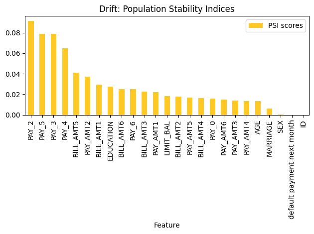
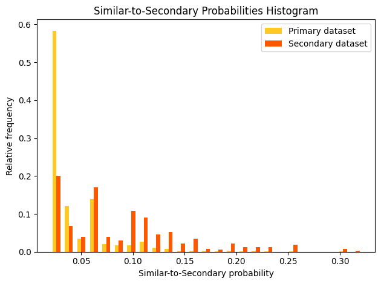
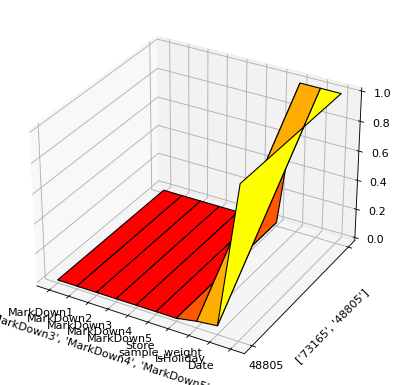
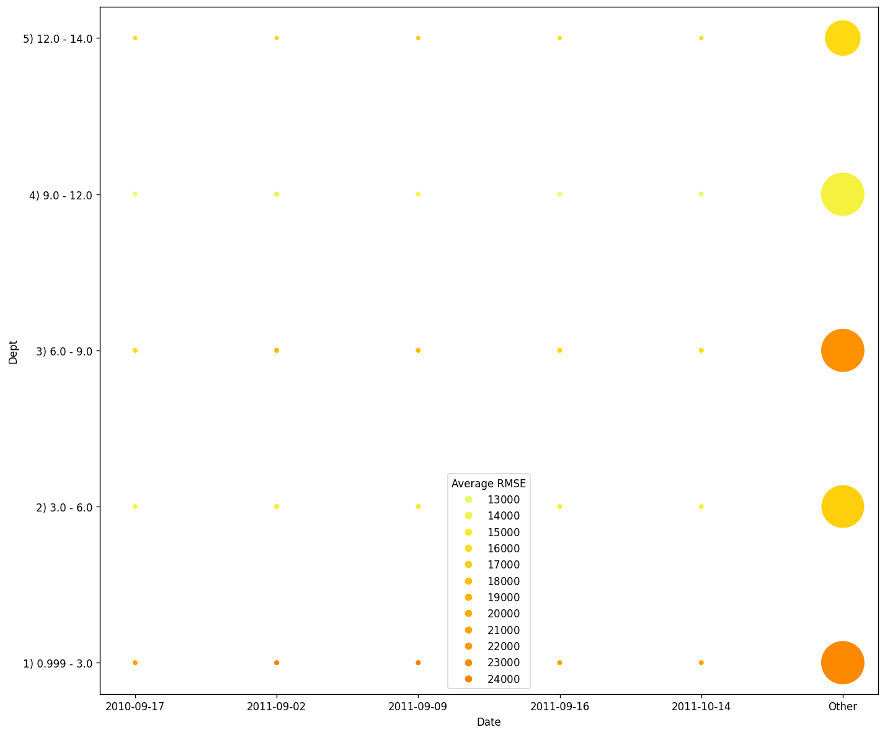
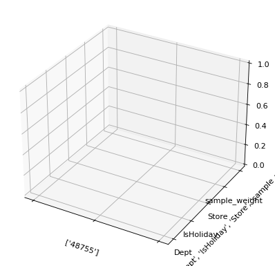
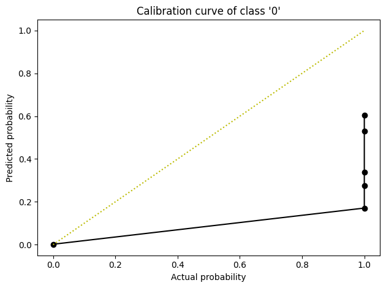

H2O Eval Studio Model Validation Explainers
This example demonstrates explainers that are based on H2O Model Validation (MV) tests:
Adversarial Similarity explainer
Backtesting explainer
Calibration Score explainer
Drift Detection explainer
Segment Performance explainer
Size Dependency explainer
Please see H2O Model Validation documentation for MV tests features, purpose and use.
[1]:
from IPython.display import Image
Image(filename='../../docs/source/images/explainers-overview.png')
[1]:

Table of Contents
Pre-requisites
Driverless AI Connections Configuration
Driverless AI Experiments Preparation
Interpretation: Python API
Drift Detection explainer
H2O Model Validation explainers that use Driverless AI (regression)
Calibration Score explainer (classification)
Interpretation: CLI
Drift Detection explainer
H2O Model Validation explainers that use Driverless AI (regression
Pre-requisites
[2]:
import json
import os
import datatable
import webbrowser
from h2o_sonar import config as h2o_sonar_config
from h2o_sonar import interpret
from h2o_sonar.lib.api import commons
from h2o_sonar.lib.api import explainers
import warnings
warnings.filterwarnings('ignore')
[3]:
from h2o_sonar.explainers.drift_explainer import DriftDetectionExplainer
from h2o_sonar.explainers.adversarial_similarity_explainer import AdversarialSimilarityExplainer
from h2o_sonar.explainers.size_dependency_explainer import SizeDependencyExplainer
from h2o_sonar.explainers.segment_performance_explainer import SegmentPerformanceExplainer
from h2o_sonar.explainers.calibration_score_explainer import CalibrationScoreExplainer
from h2o_sonar.explainers.backtesting_explainer import BacktestingExplainer
Configuration
Certain MV-based explainers require Driverless AI connection and/or Driverless autoML connection (see the documentation). Driverless AI connection must be configured prior running the interpretation:
[4]:
# CHOSE and UPDATE one of the Driverless AI server options:
# OPTION: H2O AIEM hosted Driverless AI
AIEM_DAI_WORKER_CONNECTION = h2o_sonar_config.ConnectionConfig(
connection_type=h2o_sonar_config.ConnectionConfigType.DRIVERLESS_AI_AIEM.name,
name="My H2O AIEM hosted Driverless AI ",
description="Driverless AI server hosted by H2O Enterprise AIEM.",
# H2O AIEM server URL
server_url="https://enginemanager.cloud.h2o.ai/",
# name of the Driverless AI server in H2O AIEM
server_id="new-dai-engine-42",
# H2O.ai environment URL
environment_url="https://cloud.h2o.ai",
# valid H2O.ai Cloud user name
username="firstname.lastname@h2o.ai",
# H2O.ai refresh token for given environment which might be obtained from:
# H2O.ai Cloud > User > CLI & API Access > API Token (generation)
token=os.getenv("H2O_SONAR_AIEM_REFRESH_TOKEN_C_Q"),
# REFRESH_TOKEN as token use type
token_use_type=h2o_sonar_config.TokenUseType.REFRESH_TOKEN.name,
)
# OPTION: H2O Enterprise Steam hosted Driverless AI
STEAM_DAI_WORKER_CONNECTION = h2o_sonar_config.ConnectionConfig(
connection_type=h2o_sonar_config.ConnectionConfigType.DRIVERLESS_AI_STEAM.name,
name="My H2O Steam hosted Driverless AI ",
description="Driverless AI server hosted by H2O Enterprise Steam.",
# name of the Driverless AI server in H2O Enterprise Steam
server_id="my-demo-driverless-ai",
# H2O Enterprise Steam server URL
server_url="https://steam.cloud.h2o.ai/",
# username (needed by MV, but actually overwritten after contacting Steam)
username="firstname.lastname@h2o.ai",
# H2O Enterprise Steam client access token which might be obtained from:
# Enterprise Steam > Configurations > Personal Access Token > Get token
token=os.getenv("H2O_SONAR_STEAM_TOKEN_CLOUD"),
# ACCESS_TOKEN as token use type
token_use_type=h2o_sonar_config.TokenUseType.ACCESS_TOKEN.name,
)
# OPTION: local/private Driverless AI installation
LOCAL_DAI_WORKER_CONNECTION = h2o_sonar_config.ConnectionConfig(
connection_type=h2o_sonar_config.ConnectionConfigType.DRIVERLESS_AI.name,
name="Local Driverless AI server",
description="Driverless AI server running on the localhost.",
server_url="http://localhost:12345",
username="h2oai",
password="h2oai",
)
# MAKE YOUR CHOICE fro one of the options above:
DAI_WORKER_CONNECTION=LOCAL_DAI_WORKER_CONNECTION
[5]:
# add Driverless AI connection to the H2O Eval Studio configuration
h2o_sonar_config.config.add_connection(DAI_WORKER_CONNECTION)
[6]:
h2o_sonar_config.config.to_dict(encrypt=False)
[6]:
{'h2o_host': 'localhost',
'h2o_port': 12349,
'h2o_auto_start': True,
'h2o_min_mem_size': '2G',
'h2o_max_mem_size': '4G',
'custom_explainers': [],
'look_and_feel': 'h2o_sonar',
'per_explainer_logger': True,
'create_html_representations': True,
'connections': [{'key': '0d860575-9d4b-46e5-9870-97ebd73780a1',
'connection_type': 'DRIVERLESS_AI',
'name': 'Local Driverless AI server',
'description': 'Driverless AI server running on the localhost.',
'auth_server_url': '',
'environment_url': '',
'server_url': 'http://localhost:12345',
'server_id': '',
'realm_name': '',
'client_id': '',
'token': '',
'token_use_type': '',
'username': 'h2oai',
'password': 'h2oai'}],
'licenses': []}
Driverless AI Experiments
Prepare time series and multinomial Driverless AI experiments from below to be EXPLAINED by H2O Model Validation based explainers provided by H2O Eval Studio.
[7]:
# TIME SERIES Driverless AI experiment
#
# 1) create a time series experiment in Driverless AI to build the model to be EXPLAINED, for example:
# train dataset: walmart_tts_small_train.csv
# test dataset : walmart_tts_small_test.csv
# target column: Weekly_Sales
# time_col : Date
# 2) set UUIDs of the Driverless AI experiment and dataset(s):
ts_model_uuid = "b78cb888-f658-11ed-9ecf-0242709d15f7"
ts_dataset_uuid = "a407dd4c-f658-11ed-9ecf-0242709d15f7"
ts_testset_uuid = "a4077500-f658-11ed-9ecf-0242709d15f7"
ts_target_col = "Weekly_Sales"
ts_time_col = "Date"
# 2) use HANDLERs to reference ^ datasets and model to be explained
ts_model_handle = commons.ResourceHandle(
connection_key=DAI_WORKER_CONNECTION.key,
resource_key=ts_model_uuid,
)
ts_dataset_handle = commons.ResourceHandle(
connection_key=DAI_WORKER_CONNECTION.key,
resource_key=ts_dataset_uuid,
)
ts_testset_handle = commons.ResourceHandle(
connection_key=DAI_WORKER_CONNECTION.key,
resource_key=ts_testset_uuid,
)
[9]:
# MULTINOMIAL Driverless AI experiment
# 1) create a multinomial experiment in Driverless AI to build the model to be EXPLAINED, for example:
# train dataset: creditcard.csv
# target column: EDUCATION
# 2) set UUIDs of the Driverless AI experiment and dataset(s):
m_model_uuid = "4b000748-fba7-11ed-8ea4-8c1d96f410ff"
m_dataset_uuid = "f330f964-ab83-11ed-aa8e-a0cec818dc16"
m_target_col = "EDUCATION"
# 2) use HANDLERs to reference ^ datasets and model to be explained
m_model_handle = commons.ResourceHandle(
connection_key=DAI_WORKER_CONNECTION.key,
resource_key=m_model_uuid,
)
m_dataset_handle = commons.ResourceHandle(
connection_key=DAI_WORKER_CONNECTION.key,
resource_key=m_dataset_uuid,
)
Interpretation: Python API
Lets run MV test explainers using the H2O Eval Studio’s Python API.
[11]:
# list H2O Model Validation explainers
mv_explainers = [e.id for e in interpret.list_explainers() if "h2o-model-validation" in e.keywords]
mv_explainers
[11]:
['h2o_sonar.explainers.drift_explainer.DriftDetectionExplainer',
'h2o_sonar.explainers.adversarial_similarity_explainer.AdversarialSimilarityExplainer',
'h2o_sonar.explainers.size_dependency_explainer.SizeDependencyExplainer',
'h2o_sonar.explainers.segment_performance_explainer.SegmentPerformanceExplainer',
'h2o_sonar.explainers.calibration_score_explainer.CalibrationScoreExplainer',
'h2o_sonar.explainers.backtesting_explainer.BacktestingExplainer']
[12]:
# get explainer name, description, parameters, keywords, ...
interpret.describe_explainer(mv_explainers[0])
[12]:
{'id': 'h2o_sonar.explainers.drift_explainer.DriftDetectionExplainer',
'name': 'DriftDetectionExplainer',
'display_name': 'Drift Detection',
'description': "Drift detection refers to a validation test that enables you to identifychanges in the distribution of variables in your model's input data, preventing model performance degradation. The explainer performs drift detection using the train and another dataset captured at different times to assess how data has changed over time. The Population Stability Index (PSI) formula is applied to each variable to measure how much the variable has shifted in distribution over time. PSI is applied to numerical and categorical columns and not date columns.",
'model_types': ['iid', 'time_series'],
'can_explain': ['regression', 'binomial', 'multinomial'],
'explanation_scopes': ['global_scope'],
'explanations': [{'explanation_type': 'global-work-dir-archive',
'name': 'WorkDirArchiveExplanation',
'category': None,
'scope': 'global',
'has_local': None,
'formats': []},
{'explanation_type': 'global-feature-importance',
'name': 'GlobalFeatImpExplanation',
'category': None,
'scope': 'global',
'has_local': None,
'formats': []}],
'parameters': [{'name': 'worker_connection_key',
'description': 'Optional connection ID of the Driverless AI configured in the H2O Eval Studio configuration. Only Driverless AI servers with username and password authentication are supported.',
'comment': '',
'type': 'str',
'val': None,
'predefined': [],
'tags': [],
'min_': 0.0,
'max_': 0.0,
'category': ''},
{'name': 'drop_cols',
'description': 'Defines the columns to drop during the validation test. Typically drop columns refer to columns that can indicate a drift without an impact on the model, like columns not used by the model, record IDs, time columns, etc.',
'comment': '',
'type': 'list',
'val': [],
'predefined': [],
'tags': ['SOURCE_DATASET_COLUMN_NAMES'],
'min_': 0.0,
'max_': 0.0,
'category': ''},
{'name': 'drift_threshold',
'description': 'Drift threshold.',
'comment': '',
'type': 'float',
'val': 0.1,
'predefined': [],
'tags': [],
'min_': 0.0,
'max_': 0.0,
'category': ''}],
'keywords': ['compliance-test',
'explains-feature-behavior',
'h2o-model-validation']}
Run Drift Detection explainer
Lets run Drift explainer - which requires two (local or remote) datasets, but does not need model.
[13]:
# prepare PRIMARY DATASET
primary_dataset_path = "../../data/predictive/creditcard.csv"
# prepare SECONDARY DATASET (just randomize/sub-set primary dataset for the DEMO purpose)
secondary_dataset = datatable.fread(primary_dataset_path)[:500, :]
secondary_dataset_path = str("/tmp/secondary_dataset.csv")
secondary_dataset.to_csv(secondary_dataset_path)
[14]:
# run the interpretation
interpretation = interpret.run_interpretation(
dataset=primary_dataset_path,
testset=secondary_dataset_path,
model=None,
target_col="default payment next month",
explainers=[DriftDetectionExplainer.explainer_id()],
results_location="results-drift",
)
2023/09/26 17:33:16 # DEBUG H2O Model Validation LogLevel: DEBUG - /home/user/h/mli/git/h2o-sonar/.venv/lib/python3.8/site-packages/h2o_mv/logging.py:97
2023/09/26 17:33:17 # WARNING IoC/DI: No implementations found for >>IMVDatabase<< - /home/user/h/mli/git/h2o-sonar/.venv/lib/python3.8/site-packages/h2o_mv/core/ioc.py:35
2023/09/26 17:33:17 # ERROR Can't save test Drift Detection: no database connection - /home/user/h/mli/git/h2o-sonar/.venv/lib/python3.8/site-packages/h2o_mv/core/mv_test.py:529
2023/09/26 17:33:17 # DEBUG Selected database: test-db - /home/user/h/mli/git/h2o-sonar/.venv/lib/python3.8/site-packages/h2o_mv/core/mv_client.py:255
2023/09/26 17:33:17 # INFO Initialize MVDatabase: test-db
2023/09/26 17:33:17 # DEBUG SQLDatabase: results-drift/h2o-sonar/mli_experiment_ea02c00c-8cb5-4596-bde0-1d602a862c1e/tmp/test.sql_db.sqlite - /home/user/h/mli/git/h2o-sonar/.venv/lib/python3.8/site-packages/h2o_mv/core/mv_client.py:187
2023/09/26 17:33:17 # DEBUG ObjectStorage: results-drift/h2o-sonar/mli_experiment_ea02c00c-8cb5-4596-bde0-1d602a862c1e/tmp/test.obj_storage.sqlite - /home/user/h/mli/git/h2o-sonar/.venv/lib/python3.8/site-packages/h2o_mv/core/mv_client.py:188
2023/09/26 17:33:17 # INFO LocalPlatform local-platform created
2023/09/26 17:33:17 # DEBUG Database cache is enabled - /home/user/h/mli/git/h2o-sonar/.venv/lib/python3.8/site-packages/h2o_mv/core/mv_cache.py:67
2023/09/26 17:33:17 # DEBUG Deleting cache entries that are older than 24 hours - /home/user/h/mli/git/h2o-sonar/.venv/lib/python3.8/site-packages/h2o_mv/core/mv_cache.py:68
2023/09/26 17:33:17 # DEBUG Import dataset obj-3a12f131-56e4-4ecc-b26f-a4bd5aae8ddc from LocalPlatform - /home/user/h/mli/git/h2o-sonar/.venv/lib/python3.8/site-packages/h2o_mv/platforms/local/platform.py:64
2023/09/26 17:33:17 # DEBUG Import dataset obj-1f7e53f1-2c5b-4477-a027-0acd1092f43a from LocalPlatform - /home/user/h/mli/git/h2o-sonar/.venv/lib/python3.8/site-packages/h2o_mv/platforms/local/platform.py:64
2023/09/26 17:33:17 # DEBUG Save Drift Detection: Drift Detection - /home/user/h/mli/git/h2o-sonar/.venv/lib/python3.8/site-packages/h2o_mv/core/mv_test.py:531
2023/09/26 17:33:17 # DEBUG Folder data/temp/mvt-701ad883-23dd-4e4f-ae35-e5e0e66cb86a/ created - /home/user/h/mli/git/h2o-sonar/.venv/lib/python3.8/site-packages/h2o_mv/core/utils.py:69
2023/09/26 17:33:17 # DEBUG Folder data/artifacts/mvt-701ad883-23dd-4e4f-ae35-e5e0e66cb86a/ created - /home/user/h/mli/git/h2o-sonar/.venv/lib/python3.8/site-packages/h2o_mv/core/utils.py:82
2023/09/26 17:33:17 # INFO Drift Detection 'Drift Detection': Running
ic| 'Creating feature distribution'
100%|████████████████████████████████████████████████████████████████████████████████████████████████████████████████████████████████████████| 25/25 [00:00<00:00, 188.17it/s]
100%|█████████████████████████████████████████████████████████████████████████████████████████████████████████████████████████████████████████| 25/25 [00:00<00:00, 47.32it/s]
2023/09/26 17:33:19 # INFO Drift Detection 'Drift Detection': Completed
2023/09/26 17:33:19 # DEBUG Save Drift Detection: Drift Detection - /home/user/h/mli/git/h2o-sonar/.venv/lib/python3.8/site-packages/h2o_mv/core/mv_test.py:531
2023/09/26 17:33:19 # DEBUG Folder data/temp/mvt-701ad883-23dd-4e4f-ae35-e5e0e66cb86a/ deleted - /home/user/h/mli/git/h2o-sonar/.venv/lib/python3.8/site-packages/h2o_mv/core/utils.py:227
2023/09/26 17:33:19 # DEBUG Folder data/artifacts/mvt-701ad883-23dd-4e4f-ae35-e5e0e66cb86a/ deleted - /home/user/h/mli/git/h2o-sonar/.venv/lib/python3.8/site-packages/h2o_mv/core/utils.py:227
[15]:
# get Drift Detection explainer result
drift_result = interpretation.get_explainer_result(
DriftDetectionExplainer.explainer_id()
)
[16]:
drift_result.plot()

[17]:
drift_result.data()
[17]:
| Feature | PSI scores | |
|---|---|---|
| ▪▪▪▪ | ▪▪▪▪▪▪▪▪ | |
| 0 | PAY_2 | 0.0915187 |
| 1 | PAY_5 | 0.0789593 |
| 2 | PAY_3 | 0.0786285 |
| 3 | PAY_4 | 0.0645408 |
| 4 | BILL_AMT5 | 0.041096 |
| 5 | PAY_AMT2 | 0.0371336 |
| 6 | BILL_AMT1 | 0.0291849 |
| 7 | EDUCATION | 0.0275294 |
| 8 | BILL_AMT6 | 0.0252464 |
| 9 | PAY_6 | 0.0249008 |
| 10 | BILL_AMT3 | 0.0224872 |
| 11 | PAY_AMT1 | 0.0223227 |
| 12 | LIMIT_BAL | 0.0182056 |
| 13 | BILL_AMT2 | 0.0177724 |
| 14 | PAY_AMT5 | 0.0167203 |
| 15 | BILL_AMT4 | 0.0162574 |
| 16 | PAY_0 | 0.0159517 |
| 17 | PAY_AMT6 | 0.0150096 |
| 18 | PAY_AMT3 | 0.014 |
| 19 | PAY_AMT4 | 0.013425 |
| 20 | AGE | 0.0133567 |
| 21 | MARRIAGE | 0.00629553 |
| 22 | SEX | 0.000531411 |
| 23 | default payment next month | 9.55195e-05 |
| 24 | ID | 0 |
[18]:
# summary
drift_result.summary()
[18]:
{'id': 'h2o_sonar.explainers.drift_explainer.DriftDetectionExplainer',
'name': 'DriftDetectionExplainer',
'display_name': 'Drift Detection',
'description': "Drift detection refers to a validation test that enables you to identifychanges in the distribution of variables in your model's input data, preventing model performance degradation. The explainer performs drift detection using the train and another dataset captured at different times to assess how data has changed over time. The Population Stability Index (PSI) formula is applied to each variable to measure how much the variable has shifted in distribution over time. PSI is applied to numerical and categorical columns and not date columns.",
'model_types': ['iid', 'time_series'],
'can_explain': ['regression', 'binomial', 'multinomial'],
'explanation_scopes': ['global_scope'],
'explanations': [{'explanation_type': 'global-feature-importance',
'name': 'DriftDetectionExplainer',
'category': 'COMPLIANCE TESTS',
'scope': 'global',
'has_local': None,
'formats': ['application/vnd.h2oai.json+datatable.jay',
'application/json']},
{'explanation_type': 'global-model-validation-result',
'name': 'DriftDetectionExplainer',
'category': 'COMPLIANCE TESTS',
'scope': 'global',
'has_local': None,
'formats': ['application/zip']},
{'explanation_type': 'global-work-dir-archive',
'name': 'DriftDetectionExplainer',
'category': 'COMPLIANCE TESTS',
'scope': 'global',
'has_local': None,
'formats': ['application/zip']},
{'explanation_type': 'global-html-fragment',
'name': 'Drift Detection',
'category': 'COMPLIANCE TESTS',
'scope': 'global',
'has_local': None,
'formats': ['text/html']}],
'parameters': [{'name': 'worker_connection_key',
'description': 'Optional connection ID of the Driverless AI configured in the H2O Eval Studio configuration. Only Driverless AI servers with username and password authentication are supported.',
'comment': '',
'type': 'str',
'val': None,
'predefined': [],
'tags': [],
'min_': 0.0,
'max_': 0.0,
'category': ''},
{'name': 'drop_cols',
'description': 'Defines the columns to drop during the validation test. Typically drop columns refer to columns that can indicate a drift without an impact on the model, like columns not used by the model, record IDs, time columns, etc.',
'comment': '',
'type': 'list',
'val': [],
'predefined': [],
'tags': ['SOURCE_DATASET_COLUMN_NAMES'],
'min_': 0.0,
'max_': 0.0,
'category': ''},
{'name': 'drift_threshold',
'description': 'Drift threshold.',
'comment': '',
'type': 'float',
'val': 0.1,
'predefined': [],
'tags': [],
'min_': 0.0,
'max_': 0.0,
'category': ''}],
'keywords': ['compliance-test',
'explains-feature-behavior',
'h2o-model-validation']}
[19]:
# open interpretation HTML report in web browser
webbrowser.open(interpretation.result.get_html_report_location())
[19]:
True
[20]:
# save the explainer result as zip archive
drift_result.zip(file_path="./drift-detection-demo-archive.zip")
[21]:
!unzip -l drift-detection-demo-archive.zip
Archive: drift-detection-demo-archive.zip
Length Date Time Name
--------- ---------- ----- ----
3757 2023-09-26 17:33 explainer_h2o_sonar_explainers_drift_explainer_DriftDetectionExplainer_dfff02c1-2007-4b47-a6fa-70d4013b42f4/result_descriptor.json
110 2023-09-26 17:33 explainer_h2o_sonar_explainers_drift_explainer_DriftDetectionExplainer_dfff02c1-2007-4b47-a6fa-70d4013b42f4/global_html_fragment/text_html.meta
358 2023-09-26 17:33 explainer_h2o_sonar_explainers_drift_explainer_DriftDetectionExplainer_dfff02c1-2007-4b47-a6fa-70d4013b42f4/global_html_fragment/text_html/explanation.html
30716 2023-09-26 17:33 explainer_h2o_sonar_explainers_drift_explainer_DriftDetectionExplainer_dfff02c1-2007-4b47-a6fa-70d4013b42f4/global_html_fragment/text_html/fi-class-0.png
164 2023-09-26 17:33 explainer_h2o_sonar_explainers_drift_explainer_DriftDetectionExplainer_dfff02c1-2007-4b47-a6fa-70d4013b42f4/global_model_validation_result/application_zip.meta
347752 2023-09-26 17:33 explainer_h2o_sonar_explainers_drift_explainer_DriftDetectionExplainer_dfff02c1-2007-4b47-a6fa-70d4013b42f4/global_model_validation_result/application_zip/explanation.zip
142 2023-09-26 17:33 explainer_h2o_sonar_explainers_drift_explainer_DriftDetectionExplainer_dfff02c1-2007-4b47-a6fa-70d4013b42f4/global_work_dir_archive/application_zip.meta
22 2023-09-26 17:33 explainer_h2o_sonar_explainers_drift_explainer_DriftDetectionExplainer_dfff02c1-2007-4b47-a6fa-70d4013b42f4/global_work_dir_archive/application_zip/explanation.zip
0 2023-09-26 17:33 explainer_h2o_sonar_explainers_drift_explainer_DriftDetectionExplainer_dfff02c1-2007-4b47-a6fa-70d4013b42f4/log/explainer_run_dfff02c1-2007-4b47-a6fa-70d4013b42f4.log
185 2023-09-26 17:33 explainer_h2o_sonar_explainers_drift_explainer_DriftDetectionExplainer_dfff02c1-2007-4b47-a6fa-70d4013b42f4/global_feature_importance/application_vnd_h2oai_json_datatable_jay.meta
143 2023-09-26 17:33 explainer_h2o_sonar_explainers_drift_explainer_DriftDetectionExplainer_dfff02c1-2007-4b47-a6fa-70d4013b42f4/global_feature_importance/application_json.meta
738 2023-09-26 17:33 explainer_h2o_sonar_explainers_drift_explainer_DriftDetectionExplainer_dfff02c1-2007-4b47-a6fa-70d4013b42f4/global_feature_importance/application_vnd_h2oai_json_datatable_jay/explanation.json
944 2023-09-26 17:33 explainer_h2o_sonar_explainers_drift_explainer_DriftDetectionExplainer_dfff02c1-2007-4b47-a6fa-70d4013b42f4/global_feature_importance/application_vnd_h2oai_json_datatable_jay/feature_importance_class_0.jay
688 2023-09-26 17:33 explainer_h2o_sonar_explainers_drift_explainer_DriftDetectionExplainer_dfff02c1-2007-4b47-a6fa-70d4013b42f4/global_feature_importance/application_json/explanation.json
1802 2023-09-26 17:33 explainer_h2o_sonar_explainers_drift_explainer_DriftDetectionExplainer_dfff02c1-2007-4b47-a6fa-70d4013b42f4/global_feature_importance/application_json/feature_importance_class_0.json
2 2023-09-26 17:33 explainer_h2o_sonar_explainers_drift_explainer_DriftDetectionExplainer_dfff02c1-2007-4b47-a6fa-70d4013b42f4/model_problems/problems_and_actions.json
--------- -------
387523 16 files
Run Adversarial Similarity explainer
Adversarial Similarity explainer can use remote Driverless AI worker to explain local datasets.
[22]:
# run the interpretation
interpretation = interpret.run_interpretation(
dataset=primary_dataset_path,
testset=secondary_dataset_path,
model=None,
target_col="default payment next month",
explainers = [
commons.ExplainerToRun(
explainer_id=AdversarialSimilarityExplainer.explainer_id(),
params={
AdversarialSimilarityExplainer.PARAM_WORKER: DAI_WORKER_CONNECTION.key,
},
),
],
results_location="results-adversarial",
)
2023/09/26 17:33:44 # DEBUG Save Adversarial Similarity: Adversarial Similarity - /home/user/h/mli/git/h2o-sonar/.venv/lib/python3.8/site-packages/h2o_mv/core/mv_test.py:531
2023/09/26 17:33:44 # WARNING Singleton MVClient already initialized, ignoring: args=(), kwargs={'data_folder': 'results-adversarial/h2o-sonar/mli_experiment_c9e66eb3-3deb-4a2c-9785-2d95ff2f38fb/tmp'} - /home/user/h/mli/git/h2o-sonar/.venv/lib/python3.8/site-packages/h2o_mv/core/utils.py:296
2023/09/26 17:33:44 # DEBUG Selected database: test-db - /home/user/h/mli/git/h2o-sonar/.venv/lib/python3.8/site-packages/h2o_mv/core/mv_client.py:255
2023/09/26 17:33:44 # INFO Initialize MVDatabase: test-db
2023/09/26 17:33:44 # DEBUG SQLDatabase: results-drift/h2o-sonar/mli_experiment_ea02c00c-8cb5-4596-bde0-1d602a862c1e/tmp/test.sql_db.sqlite - /home/user/h/mli/git/h2o-sonar/.venv/lib/python3.8/site-packages/h2o_mv/core/mv_client.py:187
2023/09/26 17:33:44 # DEBUG ObjectStorage: results-drift/h2o-sonar/mli_experiment_ea02c00c-8cb5-4596-bde0-1d602a862c1e/tmp/test.obj_storage.sqlite - /home/user/h/mli/git/h2o-sonar/.venv/lib/python3.8/site-packages/h2o_mv/core/mv_client.py:188
2023/09/26 17:33:44 # INFO Local Platform already exists
2023/09/26 17:33:44 # DEBUG Database cache is enabled - /home/user/h/mli/git/h2o-sonar/.venv/lib/python3.8/site-packages/h2o_mv/core/mv_cache.py:67
2023/09/26 17:33:44 # DEBUG Deleting cache entries that are older than 24 hours - /home/user/h/mli/git/h2o-sonar/.venv/lib/python3.8/site-packages/h2o_mv/core/mv_cache.py:68
2023/09/26 17:33:44 # DEBUG Save credentials: DriverlessCredentials(address='http://localhost:12345', username='h2oai') - /home/user/h/mli/git/h2o-sonar/.venv/lib/python3.8/site-packages/h2o_mv/core/mv_cache.py:33
A service ('Driverless AI') is running on localhost:12345 and it is accessible
2023/09/26 17:33:44 # INFO Adding connection to Driverless AI server 'http://localhost:12345' for user 'h2oai'
2023/09/26 17:33:44 # DEBUG Save credentials: DriverlessCredentials(address='http://localhost:12345', username='h2oai') - /home/user/h/mli/git/h2o-sonar/.venv/lib/python3.8/site-packages/h2o_mv/core/mv_cache.py:33
2023/09/26 17:33:46 # DEBUG Worker set: <h2o_mv.platforms.driverless.platform.DriverlessPlatform object at 0x7f73b36a0250> - /home/user/h/mli/git/h2o-sonar/.venv/lib/python3.8/site-packages/h2o_mv/core/mv_client.py:331
2023/09/26 17:33:46 # DEBUG Dataset with hash 3c4c14a0ee50160d already stored in LocalPlatform - /home/user/h/mli/git/h2o-sonar/.venv/lib/python3.8/site-packages/h2o_mv/platforms/local/platform.py:113
2023/09/26 17:33:46 # DEBUG Import dataset obj-3a12f131-56e4-4ecc-b26f-a4bd5aae8ddc from LocalPlatform - /home/user/h/mli/git/h2o-sonar/.venv/lib/python3.8/site-packages/h2o_mv/platforms/local/platform.py:64
2023/09/26 17:33:46 # DEBUG Dataset with platform_obj_key 'obj-3a12f131-56e4-4ecc-b26f-a4bd5aae8ddc' already in DB - /home/user/h/mli/git/h2o-sonar/.venv/lib/python3.8/site-packages/h2o_mv/databases/sql_db.py:314
2023/09/26 17:33:46 # DEBUG Dataset with hash ad452137d213fa4c already stored in LocalPlatform - /home/user/h/mli/git/h2o-sonar/.venv/lib/python3.8/site-packages/h2o_mv/platforms/local/platform.py:113
2023/09/26 17:33:46 # DEBUG Import dataset obj-1f7e53f1-2c5b-4477-a027-0acd1092f43a from LocalPlatform - /home/user/h/mli/git/h2o-sonar/.venv/lib/python3.8/site-packages/h2o_mv/platforms/local/platform.py:64
2023/09/26 17:33:46 # DEBUG Dataset with platform_obj_key 'obj-1f7e53f1-2c5b-4477-a027-0acd1092f43a' already in DB - /home/user/h/mli/git/h2o-sonar/.venv/lib/python3.8/site-packages/h2o_mv/databases/sql_db.py:314
2023/09/26 17:33:46 # DEBUG Save Adversarial Similarity: Adversarial Similarity - /home/user/h/mli/git/h2o-sonar/.venv/lib/python3.8/site-packages/h2o_mv/core/mv_test.py:531
2023/09/26 17:33:46 # DEBUG Folder data/temp/mvt-4c3821f7-7468-454b-bf32-0ede503ca1ca/ created - /home/user/h/mli/git/h2o-sonar/.venv/lib/python3.8/site-packages/h2o_mv/core/utils.py:69
2023/09/26 17:33:46 # DEBUG Folder data/artifacts/mvt-4c3821f7-7468-454b-bf32-0ede503ca1ca/ created - /home/user/h/mli/git/h2o-sonar/.venv/lib/python3.8/site-packages/h2o_mv/core/utils.py:82
2023/09/26 17:33:46 # INFO Adversarial Similarity 'Adversarial Similarity': Running
2023/09/26 17:33:47 # DEBUG Uploading adv-mvt-4c3821f7-7468-454b-bf32-0ede503ca1ca to worker instance - /home/user/h/mli/git/h2o-sonar/.venv/lib/python3.8/site-packages/h2o_mv/platforms/driverless/platform.py:664
Complete 100.00% - [4/4] Computed stats for column BILL_AMT6
INFO - Experiment launched at: http://localhost:12345/#/experiment?key=171de292-5c82-11ee-9192-00e04c68003f
2023/09/26 17:36:41 # INFO Adversarial Similarity 'Adversarial Similarity': Processing results
2023/09/26 17:36:41 # DEBUG Folder data/temp/7a52a2bd-13d0-4a55-8237/ created - /home/user/h/mli/git/h2o-sonar/.venv/lib/python3.8/site-packages/h2o_mv/core/utils.py:69
INFO - Downloaded 'data/temp/7a52a2bd-13d0-4a55-8237/train_preds_train.csv'
2023/09/26 17:36:42 # DEBUG Folder data/temp/7a52a2bd-13d0-4a55-8237/ deleted - /home/user/h/mli/git/h2o-sonar/.venv/lib/python3.8/site-packages/h2o_mv/core/utils.py:227
2023/09/26 17:36:42 # DEBUG Folder data/temp/2ab76e11-e81b-4736-a2e7/ created - /home/user/h/mli/git/h2o-sonar/.venv/lib/python3.8/site-packages/h2o_mv/core/utils.py:69
INFO - Downloaded 'data/temp/2ab76e11-e81b-4736-a2e7/h2oai_experiment_summary_171de292-5c82-11ee-9192-00e04c68003f.zip'
2023/09/26 17:36:42 # DEBUG Folder data/temp/2ab76e11-e81b-4736-a2e7/ deleted - /home/user/h/mli/git/h2o-sonar/.venv/lib/python3.8/site-packages/h2o_mv/core/utils.py:227
2023/09/26 17:36:42 # INFO Adversarial Similarity 'Adversarial Similarity': Completed
2023/09/26 17:36:42 # DEBUG Save Adversarial Similarity: Adversarial Similarity - /home/user/h/mli/git/h2o-sonar/.venv/lib/python3.8/site-packages/h2o_mv/core/mv_test.py:531
2023/09/26 17:36:43 # DEBUG Worker cleanup - /home/user/h/mli/git/h2o-sonar/.venv/lib/python3.8/site-packages/h2o_mv/platforms/driverless/platform.py:801
2023/09/26 17:36:43 # DEBUG Deleting temporary experiment 171de292-5c82-11ee-9192-00e04c68003f from Driverless Server http://localhost:12345 - /home/user/h/mli/git/h2o-sonar/.venv/lib/python3.8/site-packages/h2o_mv/platforms/driverless/platform.py:803
INFO - Driverless AI Server reported experiment 171de292-5c82-11ee-9192-00e04c68003f deleted.
2023/09/26 17:36:44 # DEBUG Deleting temporary dataset 162c074c-5c82-11ee-9192-00e04c68003f from Driverless Server http://localhost:12345 - /home/user/h/mli/git/h2o-sonar/.venv/lib/python3.8/site-packages/h2o_mv/platforms/driverless/platform.py:808
INFO - Driverless AI Server reported dataset 162c074c-5c82-11ee-9192-00e04c68003f deleted.
2023/09/26 17:36:44 # DEBUG Folder data/temp/mvt-4c3821f7-7468-454b-bf32-0ede503ca1ca/ deleted - /home/user/h/mli/git/h2o-sonar/.venv/lib/python3.8/site-packages/h2o_mv/core/utils.py:227
2023/09/26 17:36:44 # DEBUG Folder data/artifacts/mvt-4c3821f7-7468-454b-bf32-0ede503ca1ca/ deleted - /home/user/h/mli/git/h2o-sonar/.venv/lib/python3.8/site-packages/h2o_mv/core/utils.py:227
[23]:
result = interpretation.get_explainer_result(
AdversarialSimilarityExplainer.explainer_id()
)
[24]:
result.plot()

[25]:
result.data()
[25]:
| x | y_group_1 | y_group_2 | |
|---|---|---|---|
| ▪▪▪▪▪▪▪▪ | ▪▪▪▪▪▪▪▪ | ▪▪▪▪▪▪▪▪ | |
| 0 | 0.0259993 | 0.5837 | 0.2 |
| 1 | 0.0380496 | 0.1214 | 0.068 |
| 2 | 0.0500998 | 0.0346 | 0.04 |
| 3 | 0.06215 | 0.1397 | 0.17 |
| 4 | 0.0742002 | 0.021 | 0.04 |
| 5 | 0.0862504 | 0.0171 | 0.03 |
| 6 | 0.0983006 | 0.0163 | 0.108 |
| 7 | 0.110351 | 0.0267 | 0.09 |
| 8 | 0.122401 | 0.0105 | 0.046 |
| 9 | 0.134451 | 0.008 | 0.052 |
| 10 | 0.146501 | 0.0034 | 0.022 |
| 11 | 0.158552 | 0.003 | 0.034 |
| 12 | 0.170602 | 0.002 | 0.008 |
| 13 | 0.182652 | 0.0019 | 0.006 |
| 14 | 0.194702 | 0.0033 | 0.022 |
| 15 | 0.206752 | 0.0012 | 0.012 |
| 16 | 0.218803 | 0.0025 | 0.012 |
| 17 | 0.230853 | 0.0013 | 0.012 |
| 18 | 0.242903 | 0 | 0 |
| 19 | 0.254953 | 0.001 | 0.018 |
| 20 | 0.267003 | 0 | 0 |
| 21 | 0.279054 | 0.0003 | 0 |
| 22 | 0.291104 | 0 | 0 |
| 23 | 0.303154 | 0.0008 | 0.008 |
| 24 | 0.315204 | 0.0003 | 0.002 |
Run H2O Model Validation explainers which use Driverless AI server
Lets run a few H2O Model Validation based explainers which explain remote models and datasets hosted by a Driverless AI server.
[26]:
# list H2O Model Validation explainers
all_mv_explainers = [e.id for e in interpret.list_explainers() if "h2o-model-validation" in e.keywords]
all_mv_explainers
[26]:
['h2o_sonar.explainers.drift_explainer.DriftDetectionExplainer',
'h2o_sonar.explainers.adversarial_similarity_explainer.AdversarialSimilarityExplainer',
'h2o_sonar.explainers.size_dependency_explainer.SizeDependencyExplainer',
'h2o_sonar.explainers.segment_performance_explainer.SegmentPerformanceExplainer',
'h2o_sonar.explainers.calibration_score_explainer.CalibrationScoreExplainer',
'h2o_sonar.explainers.backtesting_explainer.BacktestingExplainer']
[27]:
# (model) handle is a string that identifies REMOTE model in the H2O Eval Studio runtime
str(ts_model_handle)
[27]:
'resource:connection:0d860575-9d4b-46e5-9870-97ebd73780a1:key:b78cb888-f658-11ed-9ecf-0242709d15f7'
[28]:
str(ts_dataset_handle)
[28]:
'resource:connection:0d860575-9d4b-46e5-9870-97ebd73780a1:key:a407dd4c-f658-11ed-9ecf-0242709d15f7'
[29]:
str(ts_testset_handle)
[29]:
'resource:connection:0d860575-9d4b-46e5-9870-97ebd73780a1:key:a4077500-f658-11ed-9ecf-0242709d15f7'
[31]:
DAI_WORKER_CONNECTION.key
[31]:
'0d860575-9d4b-46e5-9870-97ebd73780a1'
[32]:
h2o_sonar_config.config.to_dict(encrypt=False)
[32]:
{'h2o_host': 'localhost',
'h2o_port': 12349,
'h2o_auto_start': True,
'h2o_min_mem_size': '2G',
'h2o_max_mem_size': '4G',
'custom_explainers': [],
'look_and_feel': 'h2o_sonar',
'per_explainer_logger': True,
'create_html_representations': True,
'connections': [{'key': '0d860575-9d4b-46e5-9870-97ebd73780a1',
'connection_type': 'DRIVERLESS_AI',
'name': 'Local Driverless AI server',
'description': 'Driverless AI server running on the localhost.',
'auth_server_url': '',
'environment_url': '',
'server_url': 'http://localhost:12345',
'server_id': '',
'realm_name': '',
'client_id': '',
'token': '',
'token_use_type': '',
'username': 'h2oai',
'password': 'h2oai'}],
'licenses': []}
[33]:
# run explainers that support REMOTE datasets / models in order to explain a regression experiment
interpretation = interpret.run_interpretation(
dataset=ts_dataset_handle,
testset=ts_testset_handle,
model=ts_model_handle,
target_col=ts_target_col,
# schedule for run all MV explainers + specify parameters they need
explainers=[
commons.ExplainerToRun(
explainer_id=BacktestingExplainer.explainer_id(),
params={
BacktestingExplainer.PARAM_WORKER: DAI_WORKER_CONNECTION.key,
BacktestingExplainer.PARAM_TIME_COLUMN: ts_time_col,
},
),
commons.ExplainerToRun(
explainer_id=SizeDependencyExplainer.explainer_id(),
params={
SizeDependencyExplainer.PARAM_WORKER: DAI_WORKER_CONNECTION.key,
SizeDependencyExplainer.PARAM_TIME_COLUMN: ts_time_col,
},
),
commons.ExplainerToRun(
explainer_id=SegmentPerformanceExplainer.explainer_id(),
params={
SegmentPerformanceExplainer.PARAM_WORKER: DAI_WORKER_CONNECTION.key,
},
),
],
results_location="results-all-mv-explainers",
)
# HINT: Calibration Score explainer will be run later as it requires a CLASSIFICATION experiment
2023/09/26 17:36:45 # DEBUG Save Backtesting: Backtesting - /home/user/h/mli/git/h2o-sonar/.venv/lib/python3.8/site-packages/h2o_mv/core/mv_test.py:531
2023/09/26 17:36:45 # DEBUG Save Size Dependency: Size Dependency - /home/user/h/mli/git/h2o-sonar/.venv/lib/python3.8/site-packages/h2o_mv/core/mv_test.py:531
2023/09/26 17:36:45 # DEBUG Save Segment Performance: Segment Performance - /home/user/h/mli/git/h2o-sonar/.venv/lib/python3.8/site-packages/h2o_mv/core/mv_test.py:531
2023/09/26 17:36:45 # WARNING Singleton MVClient already initialized, ignoring: args=(), kwargs={'data_folder': 'results-all-mv-explainers/h2o-sonar/mli_experiment_c292bbf2-8aef-4ee7-86c4-c8c6381f70e9/tmp'} - /home/user/h/mli/git/h2o-sonar/.venv/lib/python3.8/site-packages/h2o_mv/core/utils.py:296
2023/09/26 17:36:45 # DEBUG Selected database: test-db - /home/user/h/mli/git/h2o-sonar/.venv/lib/python3.8/site-packages/h2o_mv/core/mv_client.py:255
2023/09/26 17:36:45 # INFO Initialize MVDatabase: test-db
2023/09/26 17:36:45 # DEBUG SQLDatabase: results-drift/h2o-sonar/mli_experiment_ea02c00c-8cb5-4596-bde0-1d602a862c1e/tmp/test.sql_db.sqlite - /home/user/h/mli/git/h2o-sonar/.venv/lib/python3.8/site-packages/h2o_mv/core/mv_client.py:187
2023/09/26 17:36:45 # DEBUG ObjectStorage: results-drift/h2o-sonar/mli_experiment_ea02c00c-8cb5-4596-bde0-1d602a862c1e/tmp/test.obj_storage.sqlite - /home/user/h/mli/git/h2o-sonar/.venv/lib/python3.8/site-packages/h2o_mv/core/mv_client.py:188
2023/09/26 17:36:45 # INFO Local Platform already exists
2023/09/26 17:36:45 # DEBUG Database cache is enabled - /home/user/h/mli/git/h2o-sonar/.venv/lib/python3.8/site-packages/h2o_mv/core/mv_cache.py:67
2023/09/26 17:36:45 # DEBUG Deleting cache entries that are older than 24 hours - /home/user/h/mli/git/h2o-sonar/.venv/lib/python3.8/site-packages/h2o_mv/core/mv_cache.py:68
2023/09/26 17:36:45 # DEBUG Worker set: <h2o_mv.platforms.driverless.platform.DriverlessPlatform object at 0x7f73b36a0250> - /home/user/h/mli/git/h2o-sonar/.venv/lib/python3.8/site-packages/h2o_mv/core/mv_client.py:331
2023/09/26 17:36:45 # DEBUG Save credentials: DriverlessCredentials(address='http://localhost:12345', username='h2oai') - /home/user/h/mli/git/h2o-sonar/.venv/lib/python3.8/site-packages/h2o_mv/core/mv_cache.py:33
A service ('Driverless AI') is running on localhost:12345 and it is accessible
A service ('Driverless AI') is running on localhost:12345 and it is accessible
A service ('Driverless AI') is running on localhost:12345 and it is accessible
2023/09/26 17:36:46 # INFO Adding connection to Driverless AI server 'http://localhost:12345' for user 'h2oai'
2023/09/26 17:36:46 # DEBUG Save credentials: DriverlessCredentials(address='http://localhost:12345', username='h2oai') - /home/user/h/mli/git/h2o-sonar/.venv/lib/python3.8/site-packages/h2o_mv/core/mv_cache.py:33
2023/09/26 17:36:46 # DEBUG Platform with address 'http://localhost:12345' for user 'h2oai' already in DB - /home/user/h/mli/git/h2o-sonar/.venv/lib/python3.8/site-packages/h2o_mv/databases/sql_db.py:234
2023/09/26 17:36:47 # DEBUG Worker set: <h2o_mv.platforms.driverless.platform.DriverlessPlatform object at 0x7f73cde1d700> - /home/user/h/mli/git/h2o-sonar/.venv/lib/python3.8/site-packages/h2o_mv/core/mv_client.py:331
2023/09/26 17:36:47 # INFO Connection for <class 'h2o_mv.platforms.driverless.platform.DriverlessPlatform'> not supported
2023/09/26 17:36:47 # DEBUG Import dataset a407dd4c-f658-11ed-9ecf-0242709d15f7 from Driverless Server http://localhost:12345 - /home/user/h/mli/git/h2o-sonar/.venv/lib/python3.8/site-packages/h2o_mv/platforms/driverless/platform.py:454
INFO - Downloaded 'data/temp/000-walmart_tts_small_train.csv.1684509609.0011456.csv'
2023/09/26 17:36:49 # DEBUG Import experiment b78cb888-f658-11ed-9ecf-0242709d15f7 from Driverless Server http://localhost:12345 - /home/user/h/mli/git/h2o-sonar/.venv/lib/python3.8/site-packages/h2o_mv/platforms/driverless/platform.py:628
2023/09/26 17:36:49 # DEBUG Import dataset a407dd4c-f658-11ed-9ecf-0242709d15f7 from Driverless Server http://localhost:12345 - /home/user/h/mli/git/h2o-sonar/.venv/lib/python3.8/site-packages/h2o_mv/platforms/driverless/platform.py:454
INFO - Downloaded 'data/temp/000-walmart_tts_small_train.csv.1684509609.0011456.csv'
2023/09/26 17:36:51 # DEBUG Dataset with platform_obj_key 'a407dd4c-f658-11ed-9ecf-0242709d15f7' already in DB - /home/user/h/mli/git/h2o-sonar/.venv/lib/python3.8/site-packages/h2o_mv/databases/sql_db.py:314
2023/09/26 17:36:51 # DEBUG Import dataset a4077500-f658-11ed-9ecf-0242709d15f7 from Driverless Server http://localhost:12345 - /home/user/h/mli/git/h2o-sonar/.venv/lib/python3.8/site-packages/h2o_mv/platforms/driverless/platform.py:454
INFO - Downloaded 'data/temp/000-walmart_tts_small_test.csv.1684509608.881174.csv'
2023/09/26 17:36:52 # DEBUG Folder data/temp/61793d0c-b9ee-4884-94aa/ created - /home/user/h/mli/git/h2o-sonar/.venv/lib/python3.8/site-packages/h2o_mv/core/utils.py:69
INFO - Downloaded 'data/temp/61793d0c-b9ee-4884-94aa/h2oai_experiment_summary_b78cb888-f658-11ed-9ecf-0242709d15f7.zip'
2023/09/26 17:36:52 # DEBUG Folder data/temp/61793d0c-b9ee-4884-94aa/ deleted - /home/user/h/mli/git/h2o-sonar/.venv/lib/python3.8/site-packages/h2o_mv/core/utils.py:227
2023/09/26 17:36:52 # DEBUG Save Backtesting: Backtesting - /home/user/h/mli/git/h2o-sonar/.venv/lib/python3.8/site-packages/h2o_mv/core/mv_test.py:531
2023/09/26 17:36:52 # DEBUG Folder data/temp/mvt-611575f1-cf5b-4fc9-a0ff-5685538ed42f/ created - /home/user/h/mli/git/h2o-sonar/.venv/lib/python3.8/site-packages/h2o_mv/core/utils.py:69
2023/09/26 17:36:52 # DEBUG Folder data/artifacts/mvt-611575f1-cf5b-4fc9-a0ff-5685538ed42f/ created - /home/user/h/mli/git/h2o-sonar/.venv/lib/python3.8/site-packages/h2o_mv/core/utils.py:82
2023/09/26 17:36:53 # INFO Backtesting 'Backtesting': Running
INFO - Downloaded 'data/temp/e1b7dfaa-3020-458e-a406.tmp'
2023/09/26 17:36:56 # DEBUG Uploading bt-train:0-mvt-611575f1-cf5b-4fc9-a0ff-5685538ed42f to worker instance - /home/user/h/mli/git/h2o-sonar/.venv/lib/python3.8/site-packages/h2o_mv/platforms/driverless/platform.py:664
Complete 100.00% - [4/4] Computed stats for column sample_weight
2023/09/26 17:36:58 # DEBUG Uploading bt-test:0-mvt-611575f1-cf5b-4fc9-a0ff-5685538ed42f to worker instance - /home/user/h/mli/git/h2o-sonar/.venv/lib/python3.8/site-packages/h2o_mv/platforms/driverless/platform.py:664
Complete 100.00% - [4/4] Computed stats for column sample_weight
INFO - Experiment launched at: http://localhost:12345/#/experiment?key=88d181f0-5c82-11ee-9192-00e04c68003f
2023/09/26 17:37:01 # DEBUG Uploading bt-train:1-mvt-611575f1-cf5b-4fc9-a0ff-5685538ed42f to worker instance - /home/user/h/mli/git/h2o-sonar/.venv/lib/python3.8/site-packages/h2o_mv/platforms/driverless/platform.py:664
Complete 100.00% - [4/4] Computed stats for column sample_weight
2023/09/26 17:37:03 # DEBUG Uploading bt-test:1-mvt-611575f1-cf5b-4fc9-a0ff-5685538ed42f to worker instance - /home/user/h/mli/git/h2o-sonar/.venv/lib/python3.8/site-packages/h2o_mv/platforms/driverless/platform.py:664
Complete 100.00% - [4/4] Computed stats for column sample_weight
INFO - Experiment launched at: http://localhost:12345/#/experiment?key=8c0f9028-5c82-11ee-9192-00e04c68003f
2023/09/26 17:37:41 # INFO Backtesting 'Backtesting': Processing results
2023/09/26 17:37:41 # DEBUG Folder data/temp/8be2e5a2-2323-4cbf-9dea/ created - /home/user/h/mli/git/h2o-sonar/.venv/lib/python3.8/site-packages/h2o_mv/core/utils.py:69
INFO - Downloaded 'data/temp/8be2e5a2-2323-4cbf-9dea/h2oai_experiment_summary_8c0f9028-5c82-11ee-9192-00e04c68003f.zip'
2023/09/26 17:37:41 # DEBUG Folder data/temp/8be2e5a2-2323-4cbf-9dea/ deleted - /home/user/h/mli/git/h2o-sonar/.venv/lib/python3.8/site-packages/h2o_mv/core/utils.py:227
2023/09/26 17:37:41 # INFO Backtesting 'Backtesting': Completed
2023/09/26 17:37:41 # DEBUG Save Backtesting: Backtesting - /home/user/h/mli/git/h2o-sonar/.venv/lib/python3.8/site-packages/h2o_mv/core/mv_test.py:531
2023/09/26 17:37:41 # DEBUG Worker cleanup - /home/user/h/mli/git/h2o-sonar/.venv/lib/python3.8/site-packages/h2o_mv/platforms/driverless/platform.py:801
2023/09/26 17:37:41 # DEBUG Deleting temporary experiment 8c0f9028-5c82-11ee-9192-00e04c68003f from Driverless Server http://localhost:12345 - /home/user/h/mli/git/h2o-sonar/.venv/lib/python3.8/site-packages/h2o_mv/platforms/driverless/platform.py:803
INFO - Driverless AI Server reported experiment 8c0f9028-5c82-11ee-9192-00e04c68003f deleted.
2023/09/26 17:37:43 # DEBUG Deleting temporary experiment 88d181f0-5c82-11ee-9192-00e04c68003f from Driverless Server http://localhost:12345 - /home/user/h/mli/git/h2o-sonar/.venv/lib/python3.8/site-packages/h2o_mv/platforms/driverless/platform.py:803
INFO - Driverless AI Server reported experiment 88d181f0-5c82-11ee-9192-00e04c68003f deleted.
2023/09/26 17:37:44 # DEBUG Deleting temporary dataset 89a7f96a-5c82-11ee-9192-00e04c68003f from Driverless Server http://localhost:12345 - /home/user/h/mli/git/h2o-sonar/.venv/lib/python3.8/site-packages/h2o_mv/platforms/driverless/platform.py:808
INFO - Driverless AI Server reported dataset 89a7f96a-5c82-11ee-9192-00e04c68003f deleted.
2023/09/26 17:37:45 # DEBUG Deleting temporary dataset 8b135330-5c82-11ee-9192-00e04c68003f from Driverless Server http://localhost:12345 - /home/user/h/mli/git/h2o-sonar/.venv/lib/python3.8/site-packages/h2o_mv/platforms/driverless/platform.py:808
INFO - Driverless AI Server reported dataset 8b135330-5c82-11ee-9192-00e04c68003f deleted.
2023/09/26 17:37:45 # DEBUG Deleting temporary dataset 866ecc1a-5c82-11ee-9192-00e04c68003f from Driverless Server http://localhost:12345 - /home/user/h/mli/git/h2o-sonar/.venv/lib/python3.8/site-packages/h2o_mv/platforms/driverless/platform.py:808
INFO - Driverless AI Server reported dataset 866ecc1a-5c82-11ee-9192-00e04c68003f deleted.
2023/09/26 17:37:45 # DEBUG Deleting temporary dataset 87db7e86-5c82-11ee-9192-00e04c68003f from Driverless Server http://localhost:12345 - /home/user/h/mli/git/h2o-sonar/.venv/lib/python3.8/site-packages/h2o_mv/platforms/driverless/platform.py:808
INFO - Driverless AI Server reported dataset 87db7e86-5c82-11ee-9192-00e04c68003f deleted.
2023/09/26 17:37:46 # DEBUG Folder data/temp/mvt-611575f1-cf5b-4fc9-a0ff-5685538ed42f/ deleted - /home/user/h/mli/git/h2o-sonar/.venv/lib/python3.8/site-packages/h2o_mv/core/utils.py:227
2023/09/26 17:37:46 # DEBUG Folder data/artifacts/mvt-611575f1-cf5b-4fc9-a0ff-5685538ed42f/ deleted - /home/user/h/mli/git/h2o-sonar/.venv/lib/python3.8/site-packages/h2o_mv/core/utils.py:227
2023/09/26 17:37:47 # WARNING Singleton MVClient already initialized, ignoring: args=(), kwargs={'data_folder': 'results-all-mv-explainers/h2o-sonar/mli_experiment_c292bbf2-8aef-4ee7-86c4-c8c6381f70e9/tmp'} - /home/user/h/mli/git/h2o-sonar/.venv/lib/python3.8/site-packages/h2o_mv/core/utils.py:296
2023/09/26 17:37:47 # DEBUG Selected database: test-db - /home/user/h/mli/git/h2o-sonar/.venv/lib/python3.8/site-packages/h2o_mv/core/mv_client.py:255
2023/09/26 17:37:47 # INFO Initialize MVDatabase: test-db
2023/09/26 17:37:47 # DEBUG SQLDatabase: results-drift/h2o-sonar/mli_experiment_ea02c00c-8cb5-4596-bde0-1d602a862c1e/tmp/test.sql_db.sqlite - /home/user/h/mli/git/h2o-sonar/.venv/lib/python3.8/site-packages/h2o_mv/core/mv_client.py:187
2023/09/26 17:37:47 # DEBUG ObjectStorage: results-drift/h2o-sonar/mli_experiment_ea02c00c-8cb5-4596-bde0-1d602a862c1e/tmp/test.obj_storage.sqlite - /home/user/h/mli/git/h2o-sonar/.venv/lib/python3.8/site-packages/h2o_mv/core/mv_client.py:188
2023/09/26 17:37:47 # INFO Local Platform already exists
2023/09/26 17:37:47 # DEBUG Database cache is enabled - /home/user/h/mli/git/h2o-sonar/.venv/lib/python3.8/site-packages/h2o_mv/core/mv_cache.py:67
2023/09/26 17:37:47 # DEBUG Deleting cache entries that are older than 24 hours - /home/user/h/mli/git/h2o-sonar/.venv/lib/python3.8/site-packages/h2o_mv/core/mv_cache.py:68
2023/09/26 17:37:47 # DEBUG Worker set: <h2o_mv.platforms.driverless.platform.DriverlessPlatform object at 0x7f73cde1d700> - /home/user/h/mli/git/h2o-sonar/.venv/lib/python3.8/site-packages/h2o_mv/core/mv_client.py:331
2023/09/26 17:37:47 # DEBUG Save credentials: DriverlessCredentials(address='http://localhost:12345', username='h2oai') - /home/user/h/mli/git/h2o-sonar/.venv/lib/python3.8/site-packages/h2o_mv/core/mv_cache.py:33
2023/09/26 17:37:47 # INFO Adding connection to Driverless AI server 'http://localhost:12345' for user 'h2oai'
2023/09/26 17:37:47 # DEBUG Save credentials: DriverlessCredentials(address='http://localhost:12345', username='h2oai') - /home/user/h/mli/git/h2o-sonar/.venv/lib/python3.8/site-packages/h2o_mv/core/mv_cache.py:33
2023/09/26 17:37:47 # DEBUG Platform with address 'http://localhost:12345' for user 'h2oai' already in DB - /home/user/h/mli/git/h2o-sonar/.venv/lib/python3.8/site-packages/h2o_mv/databases/sql_db.py:234
2023/09/26 17:37:49 # DEBUG Worker set: <h2o_mv.platforms.driverless.platform.DriverlessPlatform object at 0x7f73b37bd6a0> - /home/user/h/mli/git/h2o-sonar/.venv/lib/python3.8/site-packages/h2o_mv/core/mv_client.py:331
2023/09/26 17:37:49 # INFO Connection for <class 'h2o_mv.platforms.driverless.platform.DriverlessPlatform'> not supported
2023/09/26 17:37:49 # DEBUG Import dataset a407dd4c-f658-11ed-9ecf-0242709d15f7 from Driverless Server http://localhost:12345 - /home/user/h/mli/git/h2o-sonar/.venv/lib/python3.8/site-packages/h2o_mv/platforms/driverless/platform.py:454
INFO - Downloaded 'data/temp/000-walmart_tts_small_train.csv.1684509609.0011456.csv'
2023/09/26 17:37:50 # DEBUG Dataset with platform_obj_key 'a407dd4c-f658-11ed-9ecf-0242709d15f7' already in DB - /home/user/h/mli/git/h2o-sonar/.venv/lib/python3.8/site-packages/h2o_mv/databases/sql_db.py:314
2023/09/26 17:37:50 # DEBUG Import dataset a4077500-f658-11ed-9ecf-0242709d15f7 from Driverless Server http://localhost:12345 - /home/user/h/mli/git/h2o-sonar/.venv/lib/python3.8/site-packages/h2o_mv/platforms/driverless/platform.py:454
INFO - Downloaded 'data/temp/000-walmart_tts_small_test.csv.1684509608.881174.csv'
2023/09/26 17:37:52 # DEBUG Dataset with platform_obj_key 'a4077500-f658-11ed-9ecf-0242709d15f7' already in DB - /home/user/h/mli/git/h2o-sonar/.venv/lib/python3.8/site-packages/h2o_mv/databases/sql_db.py:314
2023/09/26 17:37:52 # DEBUG Import experiment b78cb888-f658-11ed-9ecf-0242709d15f7 from Driverless Server http://localhost:12345 - /home/user/h/mli/git/h2o-sonar/.venv/lib/python3.8/site-packages/h2o_mv/platforms/driverless/platform.py:628
2023/09/26 17:37:52 # DEBUG Import dataset a407dd4c-f658-11ed-9ecf-0242709d15f7 from Driverless Server http://localhost:12345 - /home/user/h/mli/git/h2o-sonar/.venv/lib/python3.8/site-packages/h2o_mv/platforms/driverless/platform.py:454
INFO - Downloaded 'data/temp/000-walmart_tts_small_train.csv.1684509609.0011456.csv'
2023/09/26 17:37:54 # DEBUG Dataset with platform_obj_key 'a407dd4c-f658-11ed-9ecf-0242709d15f7' already in DB - /home/user/h/mli/git/h2o-sonar/.venv/lib/python3.8/site-packages/h2o_mv/databases/sql_db.py:314
2023/09/26 17:37:54 # DEBUG Import dataset a4077500-f658-11ed-9ecf-0242709d15f7 from Driverless Server http://localhost:12345 - /home/user/h/mli/git/h2o-sonar/.venv/lib/python3.8/site-packages/h2o_mv/platforms/driverless/platform.py:454
INFO - Downloaded 'data/temp/000-walmart_tts_small_test.csv.1684509608.881174.csv'
2023/09/26 17:37:55 # DEBUG Dataset with platform_obj_key 'a4077500-f658-11ed-9ecf-0242709d15f7' already in DB - /home/user/h/mli/git/h2o-sonar/.venv/lib/python3.8/site-packages/h2o_mv/databases/sql_db.py:314
2023/09/26 17:37:55 # DEBUG Folder data/temp/eea1a0db-99b5-42e0-8c8f/ created - /home/user/h/mli/git/h2o-sonar/.venv/lib/python3.8/site-packages/h2o_mv/core/utils.py:69
INFO - Downloaded 'data/temp/eea1a0db-99b5-42e0-8c8f/h2oai_experiment_summary_b78cb888-f658-11ed-9ecf-0242709d15f7.zip'
2023/09/26 17:37:56 # DEBUG Folder data/temp/eea1a0db-99b5-42e0-8c8f/ deleted - /home/user/h/mli/git/h2o-sonar/.venv/lib/python3.8/site-packages/h2o_mv/core/utils.py:227
2023/09/26 17:37:56 # DEBUG Model with platform_obj_key 'b78cb888-f658-11ed-9ecf-0242709d15f7' already in DB - /home/user/h/mli/git/h2o-sonar/.venv/lib/python3.8/site-packages/h2o_mv/databases/sql_db.py:424
2023/09/26 17:37:56 # DEBUG Save Size Dependency: Size Dependency - /home/user/h/mli/git/h2o-sonar/.venv/lib/python3.8/site-packages/h2o_mv/core/mv_test.py:531
2023/09/26 17:37:56 # DEBUG Folder data/temp/mvt-920752b2-07cb-4c8d-88b6-f7378ed23238/ created - /home/user/h/mli/git/h2o-sonar/.venv/lib/python3.8/site-packages/h2o_mv/core/utils.py:69
2023/09/26 17:37:56 # DEBUG Folder data/artifacts/mvt-920752b2-07cb-4c8d-88b6-f7378ed23238/ created - /home/user/h/mli/git/h2o-sonar/.venv/lib/python3.8/site-packages/h2o_mv/core/utils.py:82
2023/09/26 17:37:56 # INFO Size Dependency 'Size Dependency': Running
2023/09/26 17:37:56 # DEBUG Get cached dataset: 000-walmart_tts_small_train.csv (mvid='ds-2752daf9-4593-4229-9614-3bb26d1cccdb', dataset_key='a407dd4c-f658-11ed-9ecf-0242709d15f7') - /home/user/h/mli/git/h2o-sonar/.venv/lib/python3.8/site-packages/h2o_mv/platforms/driverless/platform.py:495
2023/09/26 17:37:57 # DEBUG Uploading sd-train:0-mvt-920752b2-07cb-4c8d-88b6-f7378ed23238 to worker instance - /home/user/h/mli/git/h2o-sonar/.venv/lib/python3.8/site-packages/h2o_mv/platforms/driverless/platform.py:664
Complete 100.00% - [4/4] Computed stats for column sample_weight
INFO - Experiment launched at: http://localhost:12345/#/experiment?key=ac723f46-5c82-11ee-9192-00e04c68003f
2023/09/26 17:38:01 # DEBUG Uploading sd-train:1-mvt-920752b2-07cb-4c8d-88b6-f7378ed23238 to worker instance - /home/user/h/mli/git/h2o-sonar/.venv/lib/python3.8/site-packages/h2o_mv/platforms/driverless/platform.py:664
Complete 100.00% - [4/4] Computed stats for column sample_weight
INFO - Experiment launched at: http://localhost:12345/#/experiment?key=ae891ef8-5c82-11ee-9192-00e04c68003f
2023/09/26 17:38:49 # INFO Size Dependency 'Size Dependency': Processing results
2023/09/26 17:38:49 # DEBUG Folder data/temp/3aea884f-1cb3-48ad-a009/ created - /home/user/h/mli/git/h2o-sonar/.venv/lib/python3.8/site-packages/h2o_mv/core/utils.py:69
INFO - Downloaded 'data/temp/3aea884f-1cb3-48ad-a009/h2oai_experiment_summary_ac723f46-5c82-11ee-9192-00e04c68003f.zip'
2023/09/26 17:38:49 # DEBUG Folder data/temp/3aea884f-1cb3-48ad-a009/ deleted - /home/user/h/mli/git/h2o-sonar/.venv/lib/python3.8/site-packages/h2o_mv/core/utils.py:227
2023/09/26 17:38:49 # INFO Size Dependency 'Size Dependency': Completed
2023/09/26 17:38:49 # DEBUG Save Size Dependency: Size Dependency - /home/user/h/mli/git/h2o-sonar/.venv/lib/python3.8/site-packages/h2o_mv/core/mv_test.py:531
2023/09/26 17:38:49 # DEBUG Worker cleanup - /home/user/h/mli/git/h2o-sonar/.venv/lib/python3.8/site-packages/h2o_mv/platforms/driverless/platform.py:801
2023/09/26 17:38:49 # DEBUG Deleting temporary experiment ac723f46-5c82-11ee-9192-00e04c68003f from Driverless Server http://localhost:12345 - /home/user/h/mli/git/h2o-sonar/.venv/lib/python3.8/site-packages/h2o_mv/platforms/driverless/platform.py:803
INFO - Driverless AI Server reported experiment ac723f46-5c82-11ee-9192-00e04c68003f deleted.
2023/09/26 17:38:51 # DEBUG Deleting temporary experiment ae891ef8-5c82-11ee-9192-00e04c68003f from Driverless Server http://localhost:12345 - /home/user/h/mli/git/h2o-sonar/.venv/lib/python3.8/site-packages/h2o_mv/platforms/driverless/platform.py:803
INFO - Driverless AI Server reported experiment ae891ef8-5c82-11ee-9192-00e04c68003f deleted.
2023/09/26 17:38:52 # DEBUG Deleting temporary dataset ab34fc90-5c82-11ee-9192-00e04c68003f from Driverless Server http://localhost:12345 - /home/user/h/mli/git/h2o-sonar/.venv/lib/python3.8/site-packages/h2o_mv/platforms/driverless/platform.py:808
INFO - Driverless AI Server reported dataset ab34fc90-5c82-11ee-9192-00e04c68003f deleted.
2023/09/26 17:38:53 # DEBUG Deleting temporary dataset ad4f88d8-5c82-11ee-9192-00e04c68003f from Driverless Server http://localhost:12345 - /home/user/h/mli/git/h2o-sonar/.venv/lib/python3.8/site-packages/h2o_mv/platforms/driverless/platform.py:808
INFO - Driverless AI Server reported dataset ad4f88d8-5c82-11ee-9192-00e04c68003f deleted.
2023/09/26 17:38:54 # DEBUG Folder data/temp/mvt-920752b2-07cb-4c8d-88b6-f7378ed23238/ deleted - /home/user/h/mli/git/h2o-sonar/.venv/lib/python3.8/site-packages/h2o_mv/core/utils.py:227
2023/09/26 17:38:54 # DEBUG Folder data/artifacts/mvt-920752b2-07cb-4c8d-88b6-f7378ed23238/ deleted - /home/user/h/mli/git/h2o-sonar/.venv/lib/python3.8/site-packages/h2o_mv/core/utils.py:227
2023/09/26 17:38:55 # WARNING Singleton MVClient already initialized, ignoring: args=(), kwargs={'data_folder': 'results-all-mv-explainers/h2o-sonar/mli_experiment_c292bbf2-8aef-4ee7-86c4-c8c6381f70e9/tmp'} - /home/user/h/mli/git/h2o-sonar/.venv/lib/python3.8/site-packages/h2o_mv/core/utils.py:296
2023/09/26 17:38:55 # DEBUG Selected database: test-db - /home/user/h/mli/git/h2o-sonar/.venv/lib/python3.8/site-packages/h2o_mv/core/mv_client.py:255
2023/09/26 17:38:55 # INFO Initialize MVDatabase: test-db
2023/09/26 17:38:55 # DEBUG SQLDatabase: results-drift/h2o-sonar/mli_experiment_ea02c00c-8cb5-4596-bde0-1d602a862c1e/tmp/test.sql_db.sqlite - /home/user/h/mli/git/h2o-sonar/.venv/lib/python3.8/site-packages/h2o_mv/core/mv_client.py:187
2023/09/26 17:38:55 # DEBUG ObjectStorage: results-drift/h2o-sonar/mli_experiment_ea02c00c-8cb5-4596-bde0-1d602a862c1e/tmp/test.obj_storage.sqlite - /home/user/h/mli/git/h2o-sonar/.venv/lib/python3.8/site-packages/h2o_mv/core/mv_client.py:188
2023/09/26 17:38:55 # INFO Local Platform already exists
2023/09/26 17:38:55 # DEBUG Database cache is enabled - /home/user/h/mli/git/h2o-sonar/.venv/lib/python3.8/site-packages/h2o_mv/core/mv_cache.py:67
2023/09/26 17:38:55 # DEBUG Deleting cache entries that are older than 24 hours - /home/user/h/mli/git/h2o-sonar/.venv/lib/python3.8/site-packages/h2o_mv/core/mv_cache.py:68
2023/09/26 17:38:55 # DEBUG Worker set: <h2o_mv.platforms.driverless.platform.DriverlessPlatform object at 0x7f73b37bd6a0> - /home/user/h/mli/git/h2o-sonar/.venv/lib/python3.8/site-packages/h2o_mv/core/mv_client.py:331
2023/09/26 17:38:55 # DEBUG Save credentials: DriverlessCredentials(address='http://localhost:12345', username='h2oai') - /home/user/h/mli/git/h2o-sonar/.venv/lib/python3.8/site-packages/h2o_mv/core/mv_cache.py:33
2023/09/26 17:38:55 # INFO Adding connection to Driverless AI server 'http://localhost:12345' for user 'h2oai'
2023/09/26 17:38:55 # DEBUG Save credentials: DriverlessCredentials(address='http://localhost:12345', username='h2oai') - /home/user/h/mli/git/h2o-sonar/.venv/lib/python3.8/site-packages/h2o_mv/core/mv_cache.py:33
2023/09/26 17:38:55 # DEBUG Platform with address 'http://localhost:12345' for user 'h2oai' already in DB - /home/user/h/mli/git/h2o-sonar/.venv/lib/python3.8/site-packages/h2o_mv/databases/sql_db.py:234
2023/09/26 17:38:57 # DEBUG Worker set: <h2o_mv.platforms.driverless.platform.DriverlessPlatform object at 0x7f73cdc9a730> - /home/user/h/mli/git/h2o-sonar/.venv/lib/python3.8/site-packages/h2o_mv/core/mv_client.py:331
2023/09/26 17:38:57 # INFO Connection for <class 'h2o_mv.platforms.driverless.platform.DriverlessPlatform'> not supported
2023/09/26 17:38:57 # DEBUG Import dataset a407dd4c-f658-11ed-9ecf-0242709d15f7 from Driverless Server http://localhost:12345 - /home/user/h/mli/git/h2o-sonar/.venv/lib/python3.8/site-packages/h2o_mv/platforms/driverless/platform.py:454
INFO - Downloaded 'data/temp/000-walmart_tts_small_train.csv.1684509609.0011456.csv'
2023/09/26 17:38:59 # DEBUG Dataset with platform_obj_key 'a407dd4c-f658-11ed-9ecf-0242709d15f7' already in DB - /home/user/h/mli/git/h2o-sonar/.venv/lib/python3.8/site-packages/h2o_mv/databases/sql_db.py:314
2023/09/26 17:38:59 # DEBUG Import dataset a4077500-f658-11ed-9ecf-0242709d15f7 from Driverless Server http://localhost:12345 - /home/user/h/mli/git/h2o-sonar/.venv/lib/python3.8/site-packages/h2o_mv/platforms/driverless/platform.py:454
INFO - Downloaded 'data/temp/000-walmart_tts_small_test.csv.1684509608.881174.csv'
2023/09/26 17:39:00 # DEBUG Dataset with platform_obj_key 'a4077500-f658-11ed-9ecf-0242709d15f7' already in DB - /home/user/h/mli/git/h2o-sonar/.venv/lib/python3.8/site-packages/h2o_mv/databases/sql_db.py:314
2023/09/26 17:39:00 # DEBUG Import experiment b78cb888-f658-11ed-9ecf-0242709d15f7 from Driverless Server http://localhost:12345 - /home/user/h/mli/git/h2o-sonar/.venv/lib/python3.8/site-packages/h2o_mv/platforms/driverless/platform.py:628
2023/09/26 17:39:01 # DEBUG Import dataset a407dd4c-f658-11ed-9ecf-0242709d15f7 from Driverless Server http://localhost:12345 - /home/user/h/mli/git/h2o-sonar/.venv/lib/python3.8/site-packages/h2o_mv/platforms/driverless/platform.py:454
INFO - Downloaded 'data/temp/000-walmart_tts_small_train.csv.1684509609.0011456.csv'
2023/09/26 17:39:03 # DEBUG Dataset with platform_obj_key 'a407dd4c-f658-11ed-9ecf-0242709d15f7' already in DB - /home/user/h/mli/git/h2o-sonar/.venv/lib/python3.8/site-packages/h2o_mv/databases/sql_db.py:314
2023/09/26 17:39:03 # DEBUG Import dataset a4077500-f658-11ed-9ecf-0242709d15f7 from Driverless Server http://localhost:12345 - /home/user/h/mli/git/h2o-sonar/.venv/lib/python3.8/site-packages/h2o_mv/platforms/driverless/platform.py:454
INFO - Downloaded 'data/temp/000-walmart_tts_small_test.csv.1684509608.881174.csv'
2023/09/26 17:39:04 # DEBUG Dataset with platform_obj_key 'a4077500-f658-11ed-9ecf-0242709d15f7' already in DB - /home/user/h/mli/git/h2o-sonar/.venv/lib/python3.8/site-packages/h2o_mv/databases/sql_db.py:314
2023/09/26 17:39:04 # DEBUG Folder data/temp/6f1bb3c9-be39-4536-a430/ created - /home/user/h/mli/git/h2o-sonar/.venv/lib/python3.8/site-packages/h2o_mv/core/utils.py:69
INFO - Downloaded 'data/temp/6f1bb3c9-be39-4536-a430/h2oai_experiment_summary_b78cb888-f658-11ed-9ecf-0242709d15f7.zip'
2023/09/26 17:39:04 # DEBUG Folder data/temp/6f1bb3c9-be39-4536-a430/ deleted - /home/user/h/mli/git/h2o-sonar/.venv/lib/python3.8/site-packages/h2o_mv/core/utils.py:227
2023/09/26 17:39:04 # DEBUG Model with platform_obj_key 'b78cb888-f658-11ed-9ecf-0242709d15f7' already in DB - /home/user/h/mli/git/h2o-sonar/.venv/lib/python3.8/site-packages/h2o_mv/databases/sql_db.py:424
2023/09/26 17:39:04 # DEBUG Save Segment Performance: Segment Performance - /home/user/h/mli/git/h2o-sonar/.venv/lib/python3.8/site-packages/h2o_mv/core/mv_test.py:531
2023/09/26 17:39:04 # DEBUG Folder data/temp/mvt-41d6e90c-b8bd-4eb1-ba3c-1f11faa22670/ created - /home/user/h/mli/git/h2o-sonar/.venv/lib/python3.8/site-packages/h2o_mv/core/utils.py:69
2023/09/26 17:39:04 # DEBUG Folder data/artifacts/mvt-41d6e90c-b8bd-4eb1-ba3c-1f11faa22670/ created - /home/user/h/mli/git/h2o-sonar/.venv/lib/python3.8/site-packages/h2o_mv/core/utils.py:82
2023/09/26 17:39:05 # INFO Segment Performance 'Segment Performance': Running
2023/09/26 17:39:05 # DEBUG Get cached dataset: 000-walmart_tts_small_train.csv (mvid='ds-2752daf9-4593-4229-9614-3bb26d1cccdb', dataset_key='a407dd4c-f658-11ed-9ecf-0242709d15f7') - /home/user/h/mli/git/h2o-sonar/.venv/lib/python3.8/site-packages/h2o_mv/platforms/driverless/platform.py:495
Complete
2023/09/26 17:39:10 # INFO Segment Performance 'Segment Performance': Completed
2023/09/26 17:39:10 # DEBUG Save Segment Performance: Segment Performance - /home/user/h/mli/git/h2o-sonar/.venv/lib/python3.8/site-packages/h2o_mv/core/mv_test.py:531
2023/09/26 17:39:10 # DEBUG Folder data/temp/mvt-41d6e90c-b8bd-4eb1-ba3c-1f11faa22670/ deleted - /home/user/h/mli/git/h2o-sonar/.venv/lib/python3.8/site-packages/h2o_mv/core/utils.py:227
2023/09/26 17:39:10 # DEBUG Folder data/artifacts/mvt-41d6e90c-b8bd-4eb1-ba3c-1f11faa22670/ deleted - /home/user/h/mli/git/h2o-sonar/.venv/lib/python3.8/site-packages/h2o_mv/core/utils.py:227
[34]:
# open interpretation HTML report in web browser
webbrowser.open(interpretation.result.get_html_report_location())
[34]:
True
[35]:
interpretation.get_scheduled_explainer_ids()
[35]:
['h2o_sonar.explainers.backtesting_explainer.BacktestingExplainer',
'h2o_sonar.explainers.size_dependency_explainer.SizeDependencyExplainer',
'h2o_sonar.explainers.segment_performance_explainer.SegmentPerformanceExplainer']
[36]:
interpretation.get_finished_explainer_ids()
[36]:
['h2o_sonar.explainers.backtesting_explainer.BacktestingExplainer',
'h2o_sonar.explainers.size_dependency_explainer.SizeDependencyExplainer',
'h2o_sonar.explainers.segment_performance_explainer.SegmentPerformanceExplainer']
[37]:
interpretation.get_successful_explainer_ids()
[37]:
['h2o_sonar.explainers.backtesting_explainer.BacktestingExplainer',
'h2o_sonar.explainers.size_dependency_explainer.SizeDependencyExplainer',
'h2o_sonar.explainers.segment_performance_explainer.SegmentPerformanceExplainer']
[38]:
result = interpretation.get_explainer_result(
SizeDependencyExplainer.explainer_id(),
)
[39]:
result.plot()

[40]:
result.data()
[40]:
{'Dept': {'73165': 0.0, '48805': 0.0},
'MarkDown1': {'73165': 0.0, '48805': 0.0},
'MarkDown2': {'73165': 0.0, '48805': 0.0},
'MarkDown3': {'73165': 0.0, '48805': 0.0},
'MarkDown4': {'73165': 0.0, '48805': 0.0},
'MarkDown5': {'73165': 0.0, '48805': 0.0024520653},
'Store': {'73165': 0.0, '48805': 0.0052142237},
'sample_weight': {'73165': 0.0242297749, '48805': 1.0},
'IsHoliday': {'73165': 0.0389024862, '48805': 1.0},
'Date': {'73165': 1.0, '48805': 1.0}}
[41]:
result = interpretation.get_explainer_result(
SegmentPerformanceExplainer.explainer_id()
)
[42]:
result.plot()

<Figure size 640x480 with 0 Axes>
[43]:
result.data()
[43]:
| value_1 | Freq | Metric | value_2 | var_1 | var_2 | |
|---|---|---|---|---|---|---|
| ▪▪▪▪ | ▪▪▪▪▪▪▪▪ | ▪▪▪▪▪▪▪▪ | ▪▪▪▪ | ▪▪▪▪ | ▪▪▪▪ | |
| 0 | 2010-09-17 | 0.00858334 | 16080 | 2010-09-17 | Date | Date |
| 1 | 2011-09-02 | 0.00856967 | 18075.6 | 2011-09-02 | Date | Date |
| 2 | 2011-09-09 | 0.00856967 | 18049.8 | 2011-09-09 | Date | Date |
| 3 | 2011-09-16 | 0.00858334 | 16347.4 | 2011-09-16 | Date | Date |
| 4 | 2011-10-14 | 0.00856967 | 16272.6 | 2011-10-14 | Date | Date |
| 5 | Other | 0.957124 | 19211.3 | Other | Date | Date |
| 6 | 2010-09-17 | 0.00184514 | 20805.9 | 1) 0.999 - 3.0 | Date | Dept |
| 7 | 2010-09-17 | 0.00181781 | 13502.1 | 2) 3.0 - 6.0 | Date | Dept |
| 8 | 2010-09-17 | 0.00184514 | 16127 | 3) 6.0 - 9.0 | Date | Dept |
| 9 | 2010-09-17 | 0.00184514 | 12324.2 | 4) 9.0 - 12.0 | Date | Dept |
| 10 | 2010-09-17 | 0.0012301 | 16356.6 | 5) 12.0 - 14.0 | Date | Dept |
| 11 | 2011-09-02 | 0.00184514 | 24187.6 | 1) 0.999 - 3.0 | Date | Dept |
| 12 | 2011-09-02 | 0.00180414 | 14575 | 2) 3.0 - 6.0 | Date | Dept |
| 13 | 2011-09-02 | 0.00184514 | 18506.3 | 3) 6.0 - 9.0 | Date | Dept |
| 14 | 2011-09-02 | 0.00184514 | 13829.7 | 4) 9.0 - 12.0 | Date | Dept |
| ⋮ | ⋮ | ⋮ | ⋮ | ⋮ | ⋮ | ⋮ |
| 334 | 4) 27.0 - 36.0 | 0.0151028 | 16763.2 | 5 | Store | sample_weight |
| 335 | 5) 36.0 - 45.0 | 0.183407 | 16224.6 | 1 | Store | sample_weight |
| 336 | 5) 36.0 - 45.0 | 0.0152942 | 17821.4 | 5 | Store | sample_weight |
| 337 | 1 | 0.923105 | 18956.6 | 1 | sample_weight | sample_weight |
| 338 | 5 | 0.0768947 | 20998.1 | 5 | sample_weight | sample_weight |
[44]:
result = interpretation.get_explainer_result(
BacktestingExplainer.explainer_id()
)
[45]:
result.plot()

[46]:
result.data()
[46]:
{'48755': {'Dept': 0.0,
'IsHoliday': 0.0,
'Store': 0.0,
'sample_weight': 0.3120111525,
'Date': 1.0}}
Calibration Score explainer
Calibration Score explainer requires classification (in contrast to the explainers which were run in the previous section to explain a regression problem).
[47]:
# run the interpretation
interpretation = interpret.run_interpretation(
dataset=m_dataset_handle,
model=m_model_handle,
target_col=m_target_col,
# schedule for run all MV explainers + specify parameters they need
explainers=[
commons.ExplainerToRun(
explainer_id=CalibrationScoreExplainer.explainer_id(),
params={
CalibrationScoreExplainer.PARAM_WORKER: DAI_WORKER_CONNECTION.key,
},
),
],
results_location="results-calibration-score",
)
# HINT: Calibration Score explainer will be run later as it requires a CLASSIFICATION experiment
2023/09/26 17:39:30 # DEBUG Save Calibration Score: Calibration Score - /home/user/h/mli/git/h2o-sonar/.venv/lib/python3.8/site-packages/h2o_mv/core/mv_test.py:531
2023/09/26 17:39:30 # WARNING Singleton MVClient already initialized, ignoring: args=(), kwargs={'data_folder': 'results-calibration-score/h2o-sonar/mli_experiment_ff0c6f6e-cdca-4098-bf85-aa8584955177/tmp'} - /home/user/h/mli/git/h2o-sonar/.venv/lib/python3.8/site-packages/h2o_mv/core/utils.py:296
2023/09/26 17:39:30 # DEBUG Selected database: test-db - /home/user/h/mli/git/h2o-sonar/.venv/lib/python3.8/site-packages/h2o_mv/core/mv_client.py:255
2023/09/26 17:39:30 # INFO Initialize MVDatabase: test-db
2023/09/26 17:39:30 # DEBUG SQLDatabase: results-drift/h2o-sonar/mli_experiment_ea02c00c-8cb5-4596-bde0-1d602a862c1e/tmp/test.sql_db.sqlite - /home/user/h/mli/git/h2o-sonar/.venv/lib/python3.8/site-packages/h2o_mv/core/mv_client.py:187
2023/09/26 17:39:30 # DEBUG ObjectStorage: results-drift/h2o-sonar/mli_experiment_ea02c00c-8cb5-4596-bde0-1d602a862c1e/tmp/test.obj_storage.sqlite - /home/user/h/mli/git/h2o-sonar/.venv/lib/python3.8/site-packages/h2o_mv/core/mv_client.py:188
2023/09/26 17:39:30 # INFO Local Platform already exists
2023/09/26 17:39:30 # DEBUG Database cache is enabled - /home/user/h/mli/git/h2o-sonar/.venv/lib/python3.8/site-packages/h2o_mv/core/mv_cache.py:67
2023/09/26 17:39:30 # DEBUG Deleting cache entries that are older than 24 hours - /home/user/h/mli/git/h2o-sonar/.venv/lib/python3.8/site-packages/h2o_mv/core/mv_cache.py:68
2023/09/26 17:39:30 # DEBUG Worker set: <h2o_mv.platforms.driverless.platform.DriverlessPlatform object at 0x7f73cdc9a730> - /home/user/h/mli/git/h2o-sonar/.venv/lib/python3.8/site-packages/h2o_mv/core/mv_client.py:331
2023/09/26 17:39:30 # DEBUG Save credentials: DriverlessCredentials(address='http://localhost:12345', username='h2oai') - /home/user/h/mli/git/h2o-sonar/.venv/lib/python3.8/site-packages/h2o_mv/core/mv_cache.py:33
A service ('Driverless AI') is running on localhost:12345 and it is accessible
2023/09/26 17:39:30 # INFO Adding connection to Driverless AI server 'http://localhost:12345' for user 'h2oai'
2023/09/26 17:39:30 # DEBUG Save credentials: DriverlessCredentials(address='http://localhost:12345', username='h2oai') - /home/user/h/mli/git/h2o-sonar/.venv/lib/python3.8/site-packages/h2o_mv/core/mv_cache.py:33
2023/09/26 17:39:30 # DEBUG Platform with address 'http://localhost:12345' for user 'h2oai' already in DB - /home/user/h/mli/git/h2o-sonar/.venv/lib/python3.8/site-packages/h2o_mv/databases/sql_db.py:234
2023/09/26 17:39:32 # DEBUG Worker set: <h2o_mv.platforms.driverless.platform.DriverlessPlatform object at 0x7f7363f8a430> - /home/user/h/mli/git/h2o-sonar/.venv/lib/python3.8/site-packages/h2o_mv/core/mv_client.py:331
2023/09/26 17:39:32 # INFO Connection for <class 'h2o_mv.platforms.driverless.platform.DriverlessPlatform'> not supported
2023/09/26 17:39:32 # DEBUG Import dataset f330f964-ab83-11ed-aa8e-a0cec818dc16 from Driverless Server http://localhost:12345 - /home/user/h/mli/git/h2o-sonar/.venv/lib/python3.8/site-packages/h2o_mv/platforms/driverless/platform.py:454
INFO - Downloaded 'data/temp/creditcard.csv.1676281872.9771898.csv'
2023/09/26 17:39:33 # DEBUG Import experiment 4b000748-fba7-11ed-8ea4-8c1d96f410ff from Driverless Server http://localhost:12345 - /home/user/h/mli/git/h2o-sonar/.venv/lib/python3.8/site-packages/h2o_mv/platforms/driverless/platform.py:628
2023/09/26 17:39:34 # DEBUG Import dataset f330f964-ab83-11ed-aa8e-a0cec818dc16 from Driverless Server http://localhost:12345 - /home/user/h/mli/git/h2o-sonar/.venv/lib/python3.8/site-packages/h2o_mv/platforms/driverless/platform.py:454
INFO - Downloaded 'data/temp/creditcard.csv.1676281872.9771898.csv'
2023/09/26 17:39:35 # DEBUG Dataset with platform_obj_key 'f330f964-ab83-11ed-aa8e-a0cec818dc16' already in DB - /home/user/h/mli/git/h2o-sonar/.venv/lib/python3.8/site-packages/h2o_mv/databases/sql_db.py:314
2023/09/26 17:39:35 # DEBUG Folder data/temp/8db7fd2a-ceb2-411b-ab34/ created - /home/user/h/mli/git/h2o-sonar/.venv/lib/python3.8/site-packages/h2o_mv/core/utils.py:69
INFO - Downloaded 'data/temp/8db7fd2a-ceb2-411b-ab34/h2oai_experiment_summary_4b000748-fba7-11ed-8ea4-8c1d96f410ff.zip'
2023/09/26 17:39:35 # DEBUG Folder data/temp/8db7fd2a-ceb2-411b-ab34/ deleted - /home/user/h/mli/git/h2o-sonar/.venv/lib/python3.8/site-packages/h2o_mv/core/utils.py:227
2023/09/26 17:39:35 # DEBUG Save Calibration Score: Calibration Score - /home/user/h/mli/git/h2o-sonar/.venv/lib/python3.8/site-packages/h2o_mv/core/mv_test.py:531
2023/09/26 17:39:35 # DEBUG Folder data/temp/mvt-f7cb0574-2afb-4899-9ff5-3ce2e2cb6087/ created - /home/user/h/mli/git/h2o-sonar/.venv/lib/python3.8/site-packages/h2o_mv/core/utils.py:69
2023/09/26 17:39:35 # DEBUG Folder data/artifacts/mvt-f7cb0574-2afb-4899-9ff5-3ce2e2cb6087/ created - /home/user/h/mli/git/h2o-sonar/.venv/lib/python3.8/site-packages/h2o_mv/core/utils.py:82
2023/09/26 17:39:36 # INFO Calibration Score 'Calibration Score': Running
Complete
2023/09/26 17:39:40 # INFO Calibration Score 'Calibration Score': Completed
2023/09/26 17:39:40 # DEBUG Save Calibration Score: Calibration Score - /home/user/h/mli/git/h2o-sonar/.venv/lib/python3.8/site-packages/h2o_mv/core/mv_test.py:531
2023/09/26 17:39:40 # DEBUG Folder data/temp/mvt-f7cb0574-2afb-4899-9ff5-3ce2e2cb6087/ deleted - /home/user/h/mli/git/h2o-sonar/.venv/lib/python3.8/site-packages/h2o_mv/core/utils.py:227
2023/09/26 17:39:40 # DEBUG Folder data/artifacts/mvt-f7cb0574-2afb-4899-9ff5-3ce2e2cb6087/ deleted - /home/user/h/mli/git/h2o-sonar/.venv/lib/python3.8/site-packages/h2o_mv/core/utils.py:227
[48]:
# open interpretation HTML report in web browser
webbrowser.open(interpretation.result.get_html_report_location())
[48]:
True
[49]:
result = interpretation.get_explainer_result(
CalibrationScoreExplainer.explainer_id()
)
[50]:
result.plot()

<Figure size 640x480 with 0 Axes>
[51]:
result.data()
[51]:
{'classes_labels': ['0', '1', '2', '3', '4', '5', '6'],
'classes_legends': {'0': 'EDUCATION.0',
'1': 'EDUCATION.1',
'2': 'EDUCATION.2',
'3': 'EDUCATION.3',
'4': 'EDUCATION.4',
'5': 'EDUCATION.5',
'6': 'EDUCATION.6'},
'plots_paths': ['results-calibration-score/h2o-sonar/mli_experiment_ff0c6f6e-cdca-4098-bf85-aa8584955177/explainer_h2o_sonar_explainers_calibration_score_explainer_CalibrationScoreExplainer_74573bc7-16c5-487e-a565-fa001c02eac1/work/calibration_curve_0.png',
'results-calibration-score/h2o-sonar/mli_experiment_ff0c6f6e-cdca-4098-bf85-aa8584955177/explainer_h2o_sonar_explainers_calibration_score_explainer_CalibrationScoreExplainer_74573bc7-16c5-487e-a565-fa001c02eac1/work/calibration_curve_1.png',
'results-calibration-score/h2o-sonar/mli_experiment_ff0c6f6e-cdca-4098-bf85-aa8584955177/explainer_h2o_sonar_explainers_calibration_score_explainer_CalibrationScoreExplainer_74573bc7-16c5-487e-a565-fa001c02eac1/work/calibration_curve_2.png',
'results-calibration-score/h2o-sonar/mli_experiment_ff0c6f6e-cdca-4098-bf85-aa8584955177/explainer_h2o_sonar_explainers_calibration_score_explainer_CalibrationScoreExplainer_74573bc7-16c5-487e-a565-fa001c02eac1/work/calibration_curve_3.png',
'results-calibration-score/h2o-sonar/mli_experiment_ff0c6f6e-cdca-4098-bf85-aa8584955177/explainer_h2o_sonar_explainers_calibration_score_explainer_CalibrationScoreExplainer_74573bc7-16c5-487e-a565-fa001c02eac1/work/calibration_curve_4.png',
'results-calibration-score/h2o-sonar/mli_experiment_ff0c6f6e-cdca-4098-bf85-aa8584955177/explainer_h2o_sonar_explainers_calibration_score_explainer_CalibrationScoreExplainer_74573bc7-16c5-487e-a565-fa001c02eac1/work/calibration_curve_5.png',
'results-calibration-score/h2o-sonar/mli_experiment_ff0c6f6e-cdca-4098-bf85-aa8584955177/explainer_h2o_sonar_explainers_calibration_score_explainer_CalibrationScoreExplainer_74573bc7-16c5-487e-a565-fa001c02eac1/work/calibration_curve_6.png'],
'data': {'0': {'brier_score': 0.00023394372737651364,
'calibration_curve': {'Target': ['0', '0', '0', '0', '0', '0'],
'prob_true': [4.168577264579599e-05, 1.0, 1.0, 1.0, 1.0, 1.0],
'prob_pred': [0.0018975235771166031,
0.17078932666666669,
0.274813025,
0.33970129000000004,
0.5294499500000001,
0.60520023]}},
'1': {'brier_score': 0.16110014195450903,
'calibration_curve': {'Target': ['1',
'1',
'1',
'1',
'1',
'1',
'1',
'1',
'1',
'1'],
'prob_true': [0.02574389836175192,
0.09498680738786279,
0.1849246231155779,
0.32599795291709316,
0.4733868569729408,
0.6404358353510896,
0.7366273798730735,
0.9158279963403476,
1.0,
1.0],
'prob_pred': [0.07172593633467063,
0.14804822925435335,
0.2511202867386934,
0.34945573730040963,
0.44801741561700625,
0.5466558755447947,
0.6487950818087036,
0.7382659015828005,
0.8268039368253969,
0.90072805]}},
'2': {'brier_score': 0.19774319659796083,
'calibration_curve': {'Target': ['2',
'2',
'2',
'2',
'2',
'2',
'2',
'2',
'2'],
'prob_true': [0.0,
0.016511867905056758,
0.1401360544217687,
0.25562483057739227,
0.4377665761923226,
0.5962504184800803,
0.7625843279709393,
0.9038461538461539,
1.0],
'prob_pred': [0.08570079768333334,
0.16363757540247661,
0.25424372374829934,
0.3513734156058554,
0.4523625681930974,
0.54923692184466,
0.6438439597457196,
0.734262823176923,
0.8187404943636363]}},
'3': {'brier_score': 0.10323703991438297,
'calibration_curve': {'Target': ['3',
'3',
'3',
'3',
'3',
'3',
'3',
'3',
'3'],
'prob_true': [0.028092608737770027,
0.1252999873689529,
0.3228376327769347,
0.41272965879265094,
0.5710955710955711,
0.7165178571428571,
0.9215686274509803,
1.0,
1.0],
'prob_pred': [0.06785811246391579,
0.14155374299734794,
0.24225255552731428,
0.34774164095800536,
0.4448828712354311,
0.5434934320758932,
0.6411001715196082,
0.7410142480327868,
0.8383238139285715]}},
'4': {'brier_score': 0.0027960851690444323,
'calibration_curve': {'Target': ['4', '4', '4', '4', '4', '4'],
'prob_true': [0.001837160751565762,
0.9444444444444444,
1.0,
1.0,
1.0,
1.0],
'prob_pred': [0.004683773584626303,
0.1515408047777778,
0.2387325681818182,
0.34578425909090915,
0.4457971857142858,
0.5425023]}},
'5': {'brier_score': 0.006712204660318849,
'calibration_curve': {'Target': ['5', '5', '5', '5', '5', '5', '5'],
'prob_true': [0.0052275008364001336,
0.8717948717948718,
1.0,
1.0,
1.0,
1.0,
1.0],
'prob_pred': [0.008901456397448996,
0.14605884664102564,
0.250982425,
0.3392365107692307,
0.4529326545454545,
0.5299739685714286,
0.67699438]}},
'6': {'brier_score': 0.0008094460582697336,
'calibration_curve': {'Target': ['6', '6', '6', '6', '6', '6', '6', '6'],
'prob_true': [0.000208620186089206, 1.0, 1.0, 1.0, 1.0, 1.0, 1.0, 1.0],
'prob_pred': [0.002580000844333881,
0.145560698,
0.23762778750000002,
0.3246545966666667,
0.43545038,
0.5143077,
0.6134635366666666,
0.722229515]}}}}
Interpretation: CLI
[52]:
# check H2O Eval Studio command line interface (CLI) help
!h2o-sonar --help
usage: h2o-sonar [-h] [--dataset DATASET] [--target-col TARGET_COL]
[--results-location RESULTS_LOCATION] [--model MODEL]
[--validset VALIDSET] [--testset TESTSET]
[--use_raw-features USE_RAW_FEATURES]
[--weight-col WEIGHT_COL] [--drop-cols DROP_COLS]
[--sample-num-rows SAMPLE_NUM_ROWS]
[--used-features USED_FEATURES] [--model-type {pickle,mojo}]
[--explainer EXPLAINER] [--explainers EXPLAINERS]
[--all-explainers] [--explainers-pars EXPLAINERS_PARS]
[--config-path CONFIG_PATH] [--config-type CONFIG_TYPE]
[--config-value CONFIG_VALUE]
[--encryption-key ENCRYPTION_KEY] [-d]
[--args-as-json-location ARGS_AS_JSON_LOCATION]
[--log-level {error,warning,info,debug}]
action entity
H2O Eval Studio Python library for Responsible AI.
H2O Eval Studio is Python package that enables a holistic, low-risk, human-interpretable,
fair, and trustable approach to machine learning by implementing various facets of
Responsible AI.
model, dataset, validset or testset handle schema:
resource:connection:"<connection_configuration_name>":key:<resource_key>
[:version:<resource_version>]
optional arguments per action and entity:
show version:
show H2O Eval Studio version
add config:
--config-path path to JSon or TOML file with H2O Eval Studio config to be changed
--config-type config item type: 'CONNECTION' or 'LICENSE'
--config-value config item value (serialized as JSon) to add to the config file
--encryption-key secret key to encrypt config fields with sensitive data
(alternatively set H2O_SONAR_ENCRYPTION_KEY environment variable)
show config:
--config-path path to JSon or TOML file with H2O Eval Studio config
--encryption-key optional secret key to decrypt config fields with sensitive data
(alternatively set H2O_SONAR_ENCRYPTION_KEY environment variable)
list explainers:
--detailed show detailed descriptors (only IDs are shown by default)
--args-as-json-location
optional JSon file which overrides filtering CLI arguments
describe explainer:
--explainer explainer ID
run interpretation:
--dataset path to dataset
--target-col target column
--model path to the serialized model, URL or locator
--results-location
optional path to the interpretation results location (directory)
--validset optional path to validation dataset
--testset optional path to test dataset
--use_raw_features
force the use of transformed features in surrogate models
with 'false', by default the original (raw) features are used
--weight-col optional dataset column name with examples weights
--drop-cols optional list of dataset columns to drop
--sample-num-rows
optional number of rows to sample from dataset (default: sample
based on the RAM size, 0 do not sample, >0 sample to the specified
number of rows)
--all-explainers run all explainers (only the most important are run by default)
--used-features optional comma separated list of features used by the model
--model-type optional model type: 'pickle' or 'mojo'
--explainers optional comma separated list of explainer IDs to be run
--explainers-pars optional dictionary with explainer parameters
--config-path path to JSon or TOML file with H2O Eval Studio config to be changed
--args-as-json-location
optional JSon file which overrides CLI arguments
--log-level optional log level: 'error', 'warning', 'info', 'debug'
list interpretations:
--results-location
path to directory, URL, location of interpretation results
--log-level optional log level: 'error', 'warning', 'info', 'debug'
positional arguments:
action action to take: 'list', 'run' or 'describe'
entity entity on which to perform the action:
'interpretation'(s) or 'explainer'(s)
optional arguments:
-h, --help show this help message and exit
--dataset DATASET location of the dataset
--target-col TARGET_COL
target column
--results-location RESULTS_LOCATION
location where to store the interpretation results
--model MODEL location of the model
--validset VALIDSET location of the validation dataset
--testset TESTSET location of the test dataset
--use_raw-features USE_RAW_FEATURES
force the use of transformed features in surrogate
models with `false`
--weight-col WEIGHT_COL
optional dataset column name with examples weights
--drop-cols DROP_COLS
optional list of dataset columns to drop
--sample-num-rows SAMPLE_NUM_ROWS
optional number of rows to sample from the dataset
--used-features USED_FEATURES
optional comma separated list of features used by the
model
--model-type {pickle,mojo}
model type: 'pickle' (.pkl) or 'mojo' (.mojo)
--explainer EXPLAINER
ID of the explainer to describe
--explainers EXPLAINERS
comma separated list of explainer IDs to be run (only
the most important explainers are run by default)
--all-explainers run all explainers (only the most important explainers
are run by default)
--explainers-pars EXPLAINERS_PARS
optional dictionary with explainer parameters - the
dictionary key is explainer ID and value is dictionary
with parameters; parameter dictionary has parameter
name as the key and parameter value as the value
--config-path CONFIG_PATH
path to JSon or TOML file with H2O Eval Studio configuration
to be used to override defaults - specify only items
you want to change (please refer to
h2o_sonar.config.H2oSonarConfig for more details)
--config-type CONFIG_TYPE
configuration item type - 'CONNECTION' or 'LICENSE'
--config-value CONFIG_VALUE
configuration item value represented either as
dictionary or as string with JSon serialization of the
configuration item - it is expected that the config
item is NOT encrypted
--encryption-key ENCRYPTION_KEY
encryption key to be used for encrypting/decrypting
sensitive data in the configuration. If not specified,
shell environment variable H2O_SONAR_ENCRYPTION_KEY
with the encryption key is used.
-d, --detailed show detailed descriptors (only IDs are shown by
default)
--args-as-json-location ARGS_AS_JSON_LOCATION
location of the JSon file with all command arguments
(replacing command line arguments) allowing to load
them from the filesystem
--log-level {error,warning,info,debug}
log level
examples:
h2o-sonar --help
h2o-sonar show version
h2o-sonar list explainers
h2o-sonar list explainers --detailed
h2o-sonar describe explainer
--explainer=h2o_sonar.explainers.dia_explainer.DiaExplainer
h2o-sonar run interpretation
--dataset=dataset.csv
--target-col=PROFIT
--results-location=/home/user/results
--model=model.pickle
--all-explainers
h2o-sonar run interpretation
--dataset=dataset.csv
--target-col=PROFIT
--results-location=/home/user/results
--model=model.pickle
--used-features=FEATURE_1,FEATURE_2,FEATURE_3
--explainers=h2o_sonar.explainers.dia_explainer.DiaExplainer
--explainers-pars=
"{'h2o_sonar.explainers.dia_explainer.DiaExplainer':{'cut_off': 0.5}}"
--drop_cols=COLUMN_1,COLUMN_2,COLUMN_3
h2o-sonar run interpretation
--args-as-json-location=h2o-sonar-args.json
h2o-sonar list interpretations --results-location=/home/user/results
H2O Eval Studio JSon configuration example:
{
"h2o_host": "192.168.0.1",
"h2o_port": 57561,
"h2o_auto_start": true
}
Interpretation arguments JSon file example - see interpret.py::run_interpretation():
{
"dataset": "dataset.csv",
"model": "model.pickle",
"target_col": "PROFIT",
"results_location": "./results"
}
Explainer listing arguments JSon file example - see interpret.py::list_explainers():
{
"experiment_types": ["regression"],
"explanation_scopes": ["local_scope"],
"keywords": ["explains-fairness"],
"explainer_filter": [{"filter_by": "filter-name", "value": "v"}]
}
[53]:
# list explainers
!h2o-sonar list explainers
{
"explainers": [
"h2o_sonar.explainers.fi_naive_shapley_explainer.NaiveShapleyMojoFeatureImportanceExplainer",
"h2o_sonar.explainers.summary_shap_explainer.SummaryShapleyExplainer",
"h2o_sonar.explainers.dt_surrogate_explainer.DecisionTreeSurrogateExplainer",
"h2o_sonar.explainers.pd_ice_explainer.PdIceExplainer",
"h2o_sonar.explainers.dia_explainer.DiaExplainer",
"h2o_sonar.explainers.transformed_fi_shapley_explainer.ShapleyMojoTransformedFeatureImportanceExplainer",
"h2o_sonar.explainers.residual_dt_surrogate_explainer.ResidualDecisionTreeSurrogateExplainer",
"h2o_sonar.explainers.residual_pd_ice_explainer.ResidualPdIceExplainer",
"h2o_sonar.explainers.fi_kernel_shap_explainer.KernelShapFeatureImportanceExplainer",
"h2o_sonar.explainers.pd_2_features_explainer.PdFor2FeaturesExplainer",
"h2o_sonar.explainers.friedman_h_statistic_explainer.FriedmanHStatisticExplainer",
"h2o_sonar.explainers.morris_sa_explainer.MorrisSensitivityAnalysisExplainer",
"h2o_sonar.explainers.dataset_and_model_insights_explainer.DatasetAndModelInsightsExplainer",
"h2o_sonar.explainers.drift_explainer.DriftDetectionExplainer",
"h2o_sonar.explainers.adversarial_similarity_explainer.AdversarialSimilarityExplainer",
"h2o_sonar.explainers.size_dependency_explainer.SizeDependencyExplainer",
"h2o_sonar.explainers.segment_performance_explainer.SegmentPerformanceExplainer",
"h2o_sonar.explainers.calibration_score_explainer.CalibrationScoreExplainer",
"h2o_sonar.explainers.backtesting_explainer.BacktestingExplainer"
]
}
Run Drift Detection explainer using CLI
[54]:
primary_dataset_path
[54]:
'../../data/predictive/creditcard.csv'
[55]:
secondary_dataset_path
[55]:
'/tmp/secondary_dataset.csv'
[56]:
# run Drift Detection explainer
!h2o-sonar run interpretation \
--dataset {primary_dataset_path} \
--testset {secondary_dataset_path} \
--target-col "default payment next month" \
--explainers h2o_sonar.explainers.drift_explainer.DriftDetectionExplainer \
--results-location results-drift-cli
Stratified/random sampler: loading the original dataset '../../data/predictive/creditcard.csv' for sampling...
Stratified/random sampler: -> did NO sampling as the sampling limit is smaller than the number of rows in the dataset: 10000 <= 25000
Stratified/random sampler: loading the original dataset '/tmp/secondary_dataset.csv' for sampling...
Stratified/random sampler: -> did NO sampling as the sampling limit is smaller than the number of rows in the dataset: 500 <= 25000
2023/09/26 17:39:47 # DEBUG H2O Model Validation LogLevel: DEBUG - /home/user/h/mli/git/h2o-sonar/.venv/lib/python3.8/site-packages/h2o_mv/logging.py:97
2023/09/26 17:39:48 # WARNING IoC/DI: No implementations found for >>IMVDatabase<< - /home/user/h/mli/git/h2o-sonar/.venv/lib/python3.8/site-packages/h2o_mv/core/ioc.py:35
2023/09/26 17:39:48 # ERROR Can't save test Drift Detection: no database connection - /home/user/h/mli/git/h2o-sonar/.venv/lib/python3.8/site-packages/h2o_mv/core/mv_test.py:529
2023/09/26 17:39:48 # DEBUG Selected database: test-db - /home/user/h/mli/git/h2o-sonar/.venv/lib/python3.8/site-packages/h2o_mv/core/mv_client.py:255
2023/09/26 17:39:48 # INFO Initialize MVDatabase: test-db
2023/09/26 17:39:48 # DEBUG SQLDatabase: results-drift-cli/h2o-sonar/mli_experiment_532e030e-57fa-43a2-82ab-20f641f071ad/tmp/test.sql_db.sqlite - /home/user/h/mli/git/h2o-sonar/.venv/lib/python3.8/site-packages/h2o_mv/core/mv_client.py:187
2023/09/26 17:39:48 # DEBUG ObjectStorage: results-drift-cli/h2o-sonar/mli_experiment_532e030e-57fa-43a2-82ab-20f641f071ad/tmp/test.obj_storage.sqlite - /home/user/h/mli/git/h2o-sonar/.venv/lib/python3.8/site-packages/h2o_mv/core/mv_client.py:188
2023/09/26 17:39:48 # INFO LocalPlatform local-platform created
2023/09/26 17:39:48 # DEBUG Database cache is enabled - /home/user/h/mli/git/h2o-sonar/.venv/lib/python3.8/site-packages/h2o_mv/core/mv_cache.py:67
2023/09/26 17:39:48 # DEBUG Deleting cache entries that are older than 24 hours - /home/user/h/mli/git/h2o-sonar/.venv/lib/python3.8/site-packages/h2o_mv/core/mv_cache.py:68
2023/09/26 17:39:48 # DEBUG Import dataset obj-99ae974d-bd4b-4580-8d0f-7c17396905fb from LocalPlatform - /home/user/h/mli/git/h2o-sonar/.venv/lib/python3.8/site-packages/h2o_mv/platforms/local/platform.py:64
2023/09/26 17:39:48 # DEBUG Import dataset obj-0f44a792-d6e8-4f84-a495-be592eebb96c from LocalPlatform - /home/user/h/mli/git/h2o-sonar/.venv/lib/python3.8/site-packages/h2o_mv/platforms/local/platform.py:64
2023/09/26 17:39:48 # DEBUG Save Drift Detection: Drift Detection - /home/user/h/mli/git/h2o-sonar/.venv/lib/python3.8/site-packages/h2o_mv/core/mv_test.py:531
2023/09/26 17:39:48 # DEBUG Folder data/temp/mvt-d505b3c7-f16a-4d0d-9667-2f4c0d2ad957/ created - /home/user/h/mli/git/h2o-sonar/.venv/lib/python3.8/site-packages/h2o_mv/core/utils.py:69
2023/09/26 17:39:48 # DEBUG Folder data/artifacts/mvt-d505b3c7-f16a-4d0d-9667-2f4c0d2ad957/ created - /home/user/h/mli/git/h2o-sonar/.venv/lib/python3.8/site-packages/h2o_mv/core/utils.py:82
2023/09/26 17:39:48 # INFO Drift Detection 'Drift Detection': Running
ic| 'Creating feature distribution'
100%|██████████████████████████████████████████| 25/25 [00:00<00:00, 449.32it/s]
100%|███████████████████████████████████████████| 25/25 [00:00<00:00, 56.45it/s]
2023/09/26 17:39:49 # INFO Drift Detection 'Drift Detection': Completed
2023/09/26 17:39:49 # DEBUG Save Drift Detection: Drift Detection - /home/user/h/mli/git/h2o-sonar/.venv/lib/python3.8/site-packages/h2o_mv/core/mv_test.py:531
2023/09/26 17:39:49 # DEBUG Folder data/temp/mvt-d505b3c7-f16a-4d0d-9667-2f4c0d2ad957/ deleted - /home/user/h/mli/git/h2o-sonar/.venv/lib/python3.8/site-packages/h2o_mv/core/utils.py:227
2023/09/26 17:39:49 # DEBUG Folder data/artifacts/mvt-d505b3c7-f16a-4d0d-9667-2f4c0d2ad957/ deleted - /home/user/h/mli/git/h2o-sonar/.venv/lib/python3.8/site-packages/h2o_mv/core/utils.py:227
pandas.Int64Index is deprecated and will be removed from pandas in a future version. Use pandas.Index with the appropriate dtype instead.
Interpretation FINISHED.
Results directory:
file:///home/user/h/mli/git/h2o-sonar/examples/predictive/results-drift-cli
Interpretations index:
file:///home/user/h/mli/git/h2o-sonar/examples/predictive/results-drift-cli/h2o-sonar.html
HTML report:
file:///home/user/h/mli/git/h2o-sonar/examples/predictive/results-drift-cli/h2o-sonar.html
Use CLI to run H2O MV based explainers
Use command line interface to run H2O MV based explainers which depend on Driverless AI.
[57]:
# configure H2O Eval Studio by adding Driverless AI connection to the configuration
h2o_sonar_config_path = "/tmp/h2o-sonar-config.json"
# secret key to encrypt sensitive fields in the configuration
encryption_key = "my-demo-3ncr1pt10n-key"
# custom Driverless AI server connection ID
dai_connection_key = "demo-dai-connection"
# initialize configuration file with the DEFAULT H2O Eval Studio configuration
!h2o-sonar show config > {h2o_sonar_config_path}
[58]:
# verify the configuration content
!h2o-sonar show config \
--config-path {h2o_sonar_config_path} \
--encryption-key {encryption_key}
{
"h2o_host": "localhost",
"h2o_port": 12349,
"h2o_auto_start": true,
"h2o_min_mem_size": "2G",
"h2o_max_mem_size": "4G",
"custom_explainers": [],
"look_and_feel": "h2o_sonar",
"per_explainer_logger": true,
"create_html_representations": true,
"connections": [],
"licenses": []
}
[59]:
!h2o-sonar add config \
--config-type CONNECTION \
--config-path "/tmp/h2o-sonar-config.json" \
--encryption-key "my-demo-3ncr1pt10n-key" \
--config-value "{\"key\": \"demo-dai-connection\", \"connection_type\": \"DRIVERLESS_AI\", \"name\": \"Local Driverless AI server\", \"description\": \"Driverless AI server running on the localhost.\", \"auth_server_url\": \"\", \"server_url\": \"http://localhost:12345\", \"realm_name\": \"\", \"client_id\": \"\", \"token\": \"\", \"username\": \"h2oai\", \"password\": \"h2oai\"}"
[60]:
# verify the configuration content
!h2o-sonar show config \
--config-path {h2o_sonar_config_path} \
--encryption-key {encryption_key}
{
"h2o_host": "localhost",
"h2o_port": 12349,
"h2o_auto_start": true,
"h2o_min_mem_size": "2G",
"h2o_max_mem_size": "4G",
"custom_explainers": [],
"look_and_feel": "h2o_sonar",
"per_explainer_logger": true,
"create_html_representations": true,
"connections": [
{
"key": "demo-dai-connection",
"connection_type": "DRIVERLESS_AI",
"name": "Local Driverless AI server",
"description": "Driverless AI server running on the localhost.",
"auth_server_url": "",
"environment_url": "",
"server_url": "http://localhost:12345",
"server_id": "",
"realm_name": "",
"client_id": "",
"token": "",
"token_use_type": "",
"username": "h2oai",
"password": "h2oai"
}
],
"licenses": []
}
[61]:
# note that the configuration is ENCRYPTED on the filesystem and DECRYPTED in memory
!cat {h2o_sonar_config_path}
{
"h2o_host": "localhost",
"h2o_port": 12349,
"h2o_auto_start": true,
"h2o_min_mem_size": "2G",
"h2o_max_mem_size": "4G",
"custom_explainers": [],
"look_and_feel": "h2o_sonar",
"per_explainer_logger": true,
"create_html_representations": true,
"connections": [
{
"key": "demo-dai-connection",
"connection_type": "DRIVERLESS_AI",
"name": "Local Driverless AI server",
"description": "Driverless AI server running on the localhost.",
"auth_server_url": "",
"environment_url": "",
"server_url": "http://localhost:12345",
"server_id": "",
"realm_name": "",
"client_id": "",
"token": {
"encrypted": ""
},
"token_use_type": "",
"username": "h2oai",
"password": {
"encrypted": "gAAAAABlEvtKI_IBN3Jppr5b4bJxBxJwFOzLWlW2vVF3z_SGQL9f9fFX9PIAuAibmZGnCheM6uo-sM8hqu2OyyqzFVB0ynNJng=="
}
}
],
"licenses": []
}
[62]:
# if there are many CLI arguments and explainer parameters,
# then it is convenient to prepare H2O Eval Studio arguments as JSon
run_interpretation_args_path = "/tmp/run_interpretation_args.json"
run_interpretation_args = {
"model": str(ts_model_handle),
"dataset": str(ts_dataset_handle),
"testset": str(ts_testset_handle),
"target_col": ts_target_col,
"explainers": [
{
"id": BacktestingExplainer.explainer_id(),
"params": {
"worker_connection_key": dai_connection_key,
"time_col": "Date",
},
},
{
"id": SizeDependencyExplainer.explainer_id(),
"params": {
"worker_connection_key": dai_connection_key,
"time_col": "Date"
}
},
{
"id": SegmentPerformanceExplainer.explainer_id(),
"params": {
"worker_connection_key": dai_connection_key,
}
},
]
}
# save interpretation arguments to a JSon file
with open(run_interpretation_args_path, "w") as f:
json.dump(run_interpretation_args, f)
[63]:
!cat {run_interpretation_args_path}
{"model": "resource:connection:0d860575-9d4b-46e5-9870-97ebd73780a1:key:b78cb888-f658-11ed-9ecf-0242709d15f7", "dataset": "resource:connection:0d860575-9d4b-46e5-9870-97ebd73780a1:key:a407dd4c-f658-11ed-9ecf-0242709d15f7", "testset": "resource:connection:0d860575-9d4b-46e5-9870-97ebd73780a1:key:a4077500-f658-11ed-9ecf-0242709d15f7", "target_col": "Weekly_Sales", "explainers": [{"id": "h2o_sonar.explainers.backtesting_explainer.BacktestingExplainer", "params": {"worker_connection_key": "demo-dai-connection", "time_col": "Date"}}, {"id": "h2o_sonar.explainers.size_dependency_explainer.SizeDependencyExplainer", "params": {"worker_connection_key": "demo-dai-connection", "time_col": "Date"}}, {"id": "h2o_sonar.explainers.segment_performance_explainer.SegmentPerformanceExplainer", "params": {"worker_connection_key": "demo-dai-connection"}}]}
[ ]:
# run the interpretations
!h2o-sonar run interpretation \
--args-as-json-location {run_interpretation_args_path} \
--config-path {h2o_sonar_config_path} \
--encryption-key {encryption_key} \
--results-location "results-mv-dai-cli"
A service ('Driverless AI') is running on localhost:12345 and it is accessible
2023/09/26 17:39:58 # DEBUG H2O Model Validation LogLevel: DEBUG - /home/user/h/mli/git/h2o-sonar/.venv/lib/python3.8/site-packages/h2o_mv/logging.py:97
2023/09/26 17:39:58 # WARNING IoC/DI: No implementations found for >>IMVDatabase<< - /home/user/h/mli/git/h2o-sonar/.venv/lib/python3.8/site-packages/h2o_mv/core/ioc.py:35
2023/09/26 17:39:58 # ERROR Can't save test Backtesting: no database connection - /home/user/h/mli/git/h2o-sonar/.venv/lib/python3.8/site-packages/h2o_mv/core/mv_test.py:529
A service ('Driverless AI') is running on localhost:12345 and it is accessible
2023/09/26 17:39:58 # WARNING IoC/DI: No implementations found for >>IMVDatabase<< - /home/user/h/mli/git/h2o-sonar/.venv/lib/python3.8/site-packages/h2o_mv/core/ioc.py:35
2023/09/26 17:39:58 # ERROR Can't save test Size Dependency: no database connection - /home/user/h/mli/git/h2o-sonar/.venv/lib/python3.8/site-packages/h2o_mv/core/mv_test.py:529
A service ('Driverless AI') is running on localhost:12345 and it is accessible
2023/09/26 17:39:58 # WARNING IoC/DI: No implementations found for >>IMVDatabase<< - /home/user/h/mli/git/h2o-sonar/.venv/lib/python3.8/site-packages/h2o_mv/core/ioc.py:35
2023/09/26 17:39:58 # ERROR Can't save test Segment Performance: no database connection - /home/user/h/mli/git/h2o-sonar/.venv/lib/python3.8/site-packages/h2o_mv/core/mv_test.py:529
2023/09/26 17:39:58 # DEBUG Selected database: test-db - /home/user/h/mli/git/h2o-sonar/.venv/lib/python3.8/site-packages/h2o_mv/core/mv_client.py:255
2023/09/26 17:39:58 # INFO Initialize MVDatabase: test-db
2023/09/26 17:39:58 # DEBUG SQLDatabase: results-mv-dai-cli/h2o-sonar/mli_experiment_5389c272-1756-4a68-a6fc-463fdd95e673/tmp/test.sql_db.sqlite - /home/user/h/mli/git/h2o-sonar/.venv/lib/python3.8/site-packages/h2o_mv/core/mv_client.py:187
2023/09/26 17:39:58 # DEBUG ObjectStorage: results-mv-dai-cli/h2o-sonar/mli_experiment_5389c272-1756-4a68-a6fc-463fdd95e673/tmp/test.obj_storage.sqlite - /home/user/h/mli/git/h2o-sonar/.venv/lib/python3.8/site-packages/h2o_mv/core/mv_client.py:188
2023/09/26 17:39:58 # INFO LocalPlatform local-platform created
2023/09/26 17:39:58 # DEBUG Database cache is enabled - /home/user/h/mli/git/h2o-sonar/.venv/lib/python3.8/site-packages/h2o_mv/core/mv_cache.py:67
2023/09/26 17:39:58 # DEBUG Deleting cache entries that are older than 24 hours - /home/user/h/mli/git/h2o-sonar/.venv/lib/python3.8/site-packages/h2o_mv/core/mv_cache.py:68
2023/09/26 17:39:58 # DEBUG Save credentials: DriverlessCredentials(address='http://localhost:12345', username='h2oai') - /home/user/h/mli/git/h2o-sonar/.venv/lib/python3.8/site-packages/h2o_mv/core/mv_cache.py:33
2023/09/26 17:39:59 # INFO Adding connection to Driverless AI server 'http://localhost:12345' for user 'h2oai'
2023/09/26 17:39:59 # DEBUG Save credentials: DriverlessCredentials(address='http://localhost:12345', username='h2oai') - /home/user/h/mli/git/h2o-sonar/.venv/lib/python3.8/site-packages/h2o_mv/core/mv_cache.py:33
2023/09/26 17:40:00 # DEBUG Worker set: <h2o_mv.platforms.driverless.platform.DriverlessPlatform object at 0x7f0ac32cc8e0> - /home/user/h/mli/git/h2o-sonar/.venv/lib/python3.8/site-packages/h2o_mv/core/mv_client.py:331
2023/09/26 17:40:00 # INFO Connection for <class 'h2o_mv.platforms.driverless.platform.DriverlessPlatform'> not supported
2023/09/26 17:40:00 # DEBUG Import dataset a407dd4c-f658-11ed-9ecf-0242709d15f7 from Driverless Server http://localhost:12345 - /home/user/h/mli/git/h2o-sonar/.venv/lib/python3.8/site-packages/h2o_mv/platforms/driverless/platform.py:454
INFO - Downloaded 'data/temp/000-walmart_tts_small_train.csv.1684509609.0011456.csv'
2023/09/26 17:40:02 # DEBUG Import experiment b78cb888-f658-11ed-9ecf-0242709d15f7 from Driverless Server http://localhost:12345 - /home/user/h/mli/git/h2o-sonar/.venv/lib/python3.8/site-packages/h2o_mv/platforms/driverless/platform.py:628
2023/09/26 17:40:02 # DEBUG Import dataset a407dd4c-f658-11ed-9ecf-0242709d15f7 from Driverless Server http://localhost:12345 - /home/user/h/mli/git/h2o-sonar/.venv/lib/python3.8/site-packages/h2o_mv/platforms/driverless/platform.py:454
INFO - Downloaded 'data/temp/000-walmart_tts_small_train.csv.1684509609.0011456.csv'
2023/09/26 17:40:04 # DEBUG Dataset with platform_obj_key 'a407dd4c-f658-11ed-9ecf-0242709d15f7' already in DB - /home/user/h/mli/git/h2o-sonar/.venv/lib/python3.8/site-packages/h2o_mv/databases/sql_db.py:314
2023/09/26 17:40:04 # DEBUG Import dataset a4077500-f658-11ed-9ecf-0242709d15f7 from Driverless Server http://localhost:12345 - /home/user/h/mli/git/h2o-sonar/.venv/lib/python3.8/site-packages/h2o_mv/platforms/driverless/platform.py:454
INFO - Downloaded 'data/temp/000-walmart_tts_small_test.csv.1684509608.881174.csv'
2023/09/26 17:40:05 # DEBUG Folder data/temp/0fee15f1-af18-491b-acd9/ created - /home/user/h/mli/git/h2o-sonar/.venv/lib/python3.8/site-packages/h2o_mv/core/utils.py:69
INFO - Downloaded 'data/temp/0fee15f1-af18-491b-acd9/h2oai_experiment_summary_b78cb888-f658-11ed-9ecf-0242709d15f7.zip'
2023/09/26 17:40:05 # DEBUG Folder data/temp/0fee15f1-af18-491b-acd9/ deleted - /home/user/h/mli/git/h2o-sonar/.venv/lib/python3.8/site-packages/h2o_mv/core/utils.py:227
2023/09/26 17:40:05 # DEBUG Save Backtesting: Backtesting - /home/user/h/mli/git/h2o-sonar/.venv/lib/python3.8/site-packages/h2o_mv/core/mv_test.py:531
2023/09/26 17:40:05 # DEBUG Folder data/temp/mvt-c8bd7613-4246-4d68-8f18-2f340f0549d2/ created - /home/user/h/mli/git/h2o-sonar/.venv/lib/python3.8/site-packages/h2o_mv/core/utils.py:69
2023/09/26 17:40:05 # DEBUG Folder data/artifacts/mvt-c8bd7613-4246-4d68-8f18-2f340f0549d2/ created - /home/user/h/mli/git/h2o-sonar/.venv/lib/python3.8/site-packages/h2o_mv/core/utils.py:82
2023/09/26 17:40:06 # INFO Backtesting 'Backtesting': Running
INFO - Downloaded 'data/temp/a1d8ce02-22da-42a5-a83a.tmp'
2023/09/26 17:40:08 # DEBUG Uploading bt-train:0-mvt-c8bd7613-4246-4d68-8f18-2f340f0549d2 to worker instance - /home/user/h/mli/git/h2o-sonar/.venv/lib/python3.8/site-packages/h2o_mv/platforms/driverless/platform.py:664
Complete 100.00% - [4/4] Computed stats for column sample_weight
2023/09/26 17:40:11 # DEBUG Uploading bt-test:0-mvt-c8bd7613-4246-4d68-8f18-2f340f0549d2 to worker instance - /home/user/h/mli/git/h2o-sonar/.venv/lib/python3.8/site-packages/h2o_mv/platforms/driverless/platform.py:664
Complete 100.00% - [4/4] Computed stats for column sample_weight
INFO - Experiment launched at: http://localhost:12345/#/experiment?key=fb9f2854-5c82-11ee-9192-00e04c68003f
2023/09/26 17:40:14 # DEBUG Uploading bt-train:1-mvt-c8bd7613-4246-4d68-8f18-2f340f0549d2 to worker instance - /home/user/h/mli/git/h2o-sonar/.venv/lib/python3.8/site-packages/h2o_mv/platforms/driverless/platform.py:664
Complete 100.00% - [4/4] Computed stats for column sample_weight
2023/09/26 17:40:16 # DEBUG Uploading bt-test:1-mvt-c8bd7613-4246-4d68-8f18-2f340f0549d2 to worker instance - /home/user/h/mli/git/h2o-sonar/.venv/lib/python3.8/site-packages/h2o_mv/platforms/driverless/platform.py:664
Complete 100.00% - [4/4] Computed stats for column sample_weight
INFO - Experiment launched at: http://localhost:12345/#/experiment?key=fed1a4c0-5c82-11ee-9192-00e04c68003f
2023/09/26 17:40:59 # INFO Backtesting 'Backtesting': Processing results
2023/09/26 17:40:59 # DEBUG Folder data/temp/7d547b95-c3d3-4013-bd2a/ created - /home/user/h/mli/git/h2o-sonar/.venv/lib/python3.8/site-packages/h2o_mv/core/utils.py:69
INFO - Downloaded 'data/temp/7d547b95-c3d3-4013-bd2a/h2oai_experiment_summary_fed1a4c0-5c82-11ee-9192-00e04c68003f.zip'
2023/09/26 17:40:59 # DEBUG Folder data/temp/7d547b95-c3d3-4013-bd2a/ deleted - /home/user/h/mli/git/h2o-sonar/.venv/lib/python3.8/site-packages/h2o_mv/core/utils.py:227
2023/09/26 17:40:59 # INFO Backtesting 'Backtesting': Completed
2023/09/26 17:40:59 # DEBUG Save Backtesting: Backtesting - /home/user/h/mli/git/h2o-sonar/.venv/lib/python3.8/site-packages/h2o_mv/core/mv_test.py:531
2023/09/26 17:40:59 # DEBUG Worker cleanup - /home/user/h/mli/git/h2o-sonar/.venv/lib/python3.8/site-packages/h2o_mv/platforms/driverless/platform.py:801
2023/09/26 17:40:59 # DEBUG Deleting temporary experiment fed1a4c0-5c82-11ee-9192-00e04c68003f from Driverless Server http://localhost:12345 - /home/user/h/mli/git/h2o-sonar/.venv/lib/python3.8/site-packages/h2o_mv/platforms/driverless/platform.py:803
INFO - Driverless AI Server reported experiment fed1a4c0-5c82-11ee-9192-00e04c68003f deleted.
2023/09/26 17:41:00 # DEBUG Deleting temporary experiment fb9f2854-5c82-11ee-9192-00e04c68003f from Driverless Server http://localhost:12345 - /home/user/h/mli/git/h2o-sonar/.venv/lib/python3.8/site-packages/h2o_mv/platforms/driverless/platform.py:803
INFO - Driverless AI Server reported experiment fb9f2854-5c82-11ee-9192-00e04c68003f deleted.
2023/09/26 17:41:02 # DEBUG Deleting temporary dataset fc73d37e-5c82-11ee-9192-00e04c68003f from Driverless Server http://localhost:12345 - /home/user/h/mli/git/h2o-sonar/.venv/lib/python3.8/site-packages/h2o_mv/platforms/driverless/platform.py:808
INFO - Driverless AI Server reported dataset fc73d37e-5c82-11ee-9192-00e04c68003f deleted.
2023/09/26 17:41:02 # DEBUG Deleting temporary dataset f953f8b8-5c82-11ee-9192-00e04c68003f from Driverless Server http://localhost:12345 - /home/user/h/mli/git/h2o-sonar/.venv/lib/python3.8/site-packages/h2o_mv/platforms/driverless/platform.py:808
INFO - Driverless AI Server reported dataset f953f8b8-5c82-11ee-9192-00e04c68003f deleted.
2023/09/26 17:41:03 # DEBUG Deleting temporary dataset faaf950a-5c82-11ee-9192-00e04c68003f from Driverless Server http://localhost:12345 - /home/user/h/mli/git/h2o-sonar/.venv/lib/python3.8/site-packages/h2o_mv/platforms/driverless/platform.py:808
INFO - Driverless AI Server reported dataset faaf950a-5c82-11ee-9192-00e04c68003f deleted.
2023/09/26 17:41:03 # DEBUG Deleting temporary dataset fddeb026-5c82-11ee-9192-00e04c68003f from Driverless Server http://localhost:12345 - /home/user/h/mli/git/h2o-sonar/.venv/lib/python3.8/site-packages/h2o_mv/platforms/driverless/platform.py:808
INFO - Driverless AI Server reported dataset fddeb026-5c82-11ee-9192-00e04c68003f deleted.
2023/09/26 17:41:03 # DEBUG Folder data/temp/mvt-c8bd7613-4246-4d68-8f18-2f340f0549d2/ deleted - /home/user/h/mli/git/h2o-sonar/.venv/lib/python3.8/site-packages/h2o_mv/core/utils.py:227
2023/09/26 17:41:03 # DEBUG Folder data/artifacts/mvt-c8bd7613-4246-4d68-8f18-2f340f0549d2/ deleted - /home/user/h/mli/git/h2o-sonar/.venv/lib/python3.8/site-packages/h2o_mv/core/utils.py:227
pandas.Int64Index is deprecated and will be removed from pandas in a future version. Use pandas.Index with the appropriate dtype instead.
2023/09/26 17:41:04 # WARNING Singleton MVClient already initialized, ignoring: args=(), kwargs={'data_folder': 'results-mv-dai-cli/h2o-sonar/mli_experiment_5389c272-1756-4a68-a6fc-463fdd95e673/tmp'} - /home/user/h/mli/git/h2o-sonar/.venv/lib/python3.8/site-packages/h2o_mv/core/utils.py:296
2023/09/26 17:41:04 # DEBUG Selected database: test-db - /home/user/h/mli/git/h2o-sonar/.venv/lib/python3.8/site-packages/h2o_mv/core/mv_client.py:255
2023/09/26 17:41:04 # INFO Initialize MVDatabase: test-db
2023/09/26 17:41:04 # DEBUG SQLDatabase: results-mv-dai-cli/h2o-sonar/mli_experiment_5389c272-1756-4a68-a6fc-463fdd95e673/tmp/test.sql_db.sqlite - /home/user/h/mli/git/h2o-sonar/.venv/lib/python3.8/site-packages/h2o_mv/core/mv_client.py:187
2023/09/26 17:41:04 # DEBUG ObjectStorage: results-mv-dai-cli/h2o-sonar/mli_experiment_5389c272-1756-4a68-a6fc-463fdd95e673/tmp/test.obj_storage.sqlite - /home/user/h/mli/git/h2o-sonar/.venv/lib/python3.8/site-packages/h2o_mv/core/mv_client.py:188
2023/09/26 17:41:04 # INFO Local Platform already exists
2023/09/26 17:41:04 # DEBUG Database cache is enabled - /home/user/h/mli/git/h2o-sonar/.venv/lib/python3.8/site-packages/h2o_mv/core/mv_cache.py:67
2023/09/26 17:41:04 # DEBUG Deleting cache entries that are older than 24 hours - /home/user/h/mli/git/h2o-sonar/.venv/lib/python3.8/site-packages/h2o_mv/core/mv_cache.py:68
2023/09/26 17:41:04 # DEBUG Worker set: <h2o_mv.platforms.driverless.platform.DriverlessPlatform object at 0x7f0ac32cc8e0> - /home/user/h/mli/git/h2o-sonar/.venv/lib/python3.8/site-packages/h2o_mv/core/mv_client.py:331
2023/09/26 17:41:04 # DEBUG Save credentials: DriverlessCredentials(address='http://localhost:12345', username='h2oai') - /home/user/h/mli/git/h2o-sonar/.venv/lib/python3.8/site-packages/h2o_mv/core/mv_cache.py:33
2023/09/26 17:41:05 # INFO Adding connection to Driverless AI server 'http://localhost:12345' for user 'h2oai'
2023/09/26 17:41:05 # DEBUG Save credentials: DriverlessCredentials(address='http://localhost:12345', username='h2oai') - /home/user/h/mli/git/h2o-sonar/.venv/lib/python3.8/site-packages/h2o_mv/core/mv_cache.py:33
2023/09/26 17:41:05 # DEBUG Platform with address 'http://localhost:12345' for user 'h2oai' already in DB - /home/user/h/mli/git/h2o-sonar/.venv/lib/python3.8/site-packages/h2o_mv/databases/sql_db.py:234
2023/09/26 17:41:06 # DEBUG Worker set: <h2o_mv.platforms.driverless.platform.DriverlessPlatform object at 0x7f0ac267e100> - /home/user/h/mli/git/h2o-sonar/.venv/lib/python3.8/site-packages/h2o_mv/core/mv_client.py:331
2023/09/26 17:41:06 # INFO Connection for <class 'h2o_mv.platforms.driverless.platform.DriverlessPlatform'> not supported
2023/09/26 17:41:06 # DEBUG Import dataset a407dd4c-f658-11ed-9ecf-0242709d15f7 from Driverless Server http://localhost:12345 - /home/user/h/mli/git/h2o-sonar/.venv/lib/python3.8/site-packages/h2o_mv/platforms/driverless/platform.py:454
INFO - Downloaded 'data/temp/000-walmart_tts_small_train.csv.1684509609.0011456.csv'
2023/09/26 17:41:08 # DEBUG Dataset with platform_obj_key 'a407dd4c-f658-11ed-9ecf-0242709d15f7' already in DB - /home/user/h/mli/git/h2o-sonar/.venv/lib/python3.8/site-packages/h2o_mv/databases/sql_db.py:314
2023/09/26 17:41:08 # DEBUG Import dataset a4077500-f658-11ed-9ecf-0242709d15f7 from Driverless Server http://localhost:12345 - /home/user/h/mli/git/h2o-sonar/.venv/lib/python3.8/site-packages/h2o_mv/platforms/driverless/platform.py:454
INFO - Downloaded 'data/temp/000-walmart_tts_small_test.csv.1684509608.881174.csv'
2023/09/26 17:41:09 # DEBUG Dataset with platform_obj_key 'a4077500-f658-11ed-9ecf-0242709d15f7' already in DB - /home/user/h/mli/git/h2o-sonar/.venv/lib/python3.8/site-packages/h2o_mv/databases/sql_db.py:314
2023/09/26 17:41:09 # DEBUG Import experiment b78cb888-f658-11ed-9ecf-0242709d15f7 from Driverless Server http://localhost:12345 - /home/user/h/mli/git/h2o-sonar/.venv/lib/python3.8/site-packages/h2o_mv/platforms/driverless/platform.py:628
2023/09/26 17:41:10 # DEBUG Import dataset a407dd4c-f658-11ed-9ecf-0242709d15f7 from Driverless Server http://localhost:12345 - /home/user/h/mli/git/h2o-sonar/.venv/lib/python3.8/site-packages/h2o_mv/platforms/driverless/platform.py:454
INFO - Downloaded 'data/temp/000-walmart_tts_small_train.csv.1684509609.0011456.csv'
2023/09/26 17:41:12 # DEBUG Dataset with platform_obj_key 'a407dd4c-f658-11ed-9ecf-0242709d15f7' already in DB - /home/user/h/mli/git/h2o-sonar/.venv/lib/python3.8/site-packages/h2o_mv/databases/sql_db.py:314
2023/09/26 17:41:12 # DEBUG Import dataset a4077500-f658-11ed-9ecf-0242709d15f7 from Driverless Server http://localhost:12345 - /home/user/h/mli/git/h2o-sonar/.venv/lib/python3.8/site-packages/h2o_mv/platforms/driverless/platform.py:454
INFO - Downloaded 'data/temp/000-walmart_tts_small_test.csv.1684509608.881174.csv'
2023/09/26 17:41:13 # DEBUG Dataset with platform_obj_key 'a4077500-f658-11ed-9ecf-0242709d15f7' already in DB - /home/user/h/mli/git/h2o-sonar/.venv/lib/python3.8/site-packages/h2o_mv/databases/sql_db.py:314
2023/09/26 17:41:13 # DEBUG Folder data/temp/4bb9bf64-6fc8-4f7b-b369/ created - /home/user/h/mli/git/h2o-sonar/.venv/lib/python3.8/site-packages/h2o_mv/core/utils.py:69
INFO - Downloaded 'data/temp/4bb9bf64-6fc8-4f7b-b369/h2oai_experiment_summary_b78cb888-f658-11ed-9ecf-0242709d15f7.zip'
2023/09/26 17:41:13 # DEBUG Folder data/temp/4bb9bf64-6fc8-4f7b-b369/ deleted - /home/user/h/mli/git/h2o-sonar/.venv/lib/python3.8/site-packages/h2o_mv/core/utils.py:227
2023/09/26 17:41:13 # DEBUG Model with platform_obj_key 'b78cb888-f658-11ed-9ecf-0242709d15f7' already in DB - /home/user/h/mli/git/h2o-sonar/.venv/lib/python3.8/site-packages/h2o_mv/databases/sql_db.py:424
2023/09/26 17:41:13 # DEBUG Save Size Dependency: Size Dependency - /home/user/h/mli/git/h2o-sonar/.venv/lib/python3.8/site-packages/h2o_mv/core/mv_test.py:531
2023/09/26 17:41:13 # DEBUG Folder data/temp/mvt-26fb87ed-bb10-4582-a0ec-2639e345d9aa/ created - /home/user/h/mli/git/h2o-sonar/.venv/lib/python3.8/site-packages/h2o_mv/core/utils.py:69
2023/09/26 17:41:13 # DEBUG Folder data/artifacts/mvt-26fb87ed-bb10-4582-a0ec-2639e345d9aa/ created - /home/user/h/mli/git/h2o-sonar/.venv/lib/python3.8/site-packages/h2o_mv/core/utils.py:82
2023/09/26 17:41:14 # INFO Size Dependency 'Size Dependency': Running
2023/09/26 17:41:14 # DEBUG Get cached dataset: 000-walmart_tts_small_train.csv (mvid='ds-9640ed1e-24a2-4b64-a461-90a7565907af', dataset_key='a407dd4c-f658-11ed-9ecf-0242709d15f7') - /home/user/h/mli/git/h2o-sonar/.venv/lib/python3.8/site-packages/h2o_mv/platforms/driverless/platform.py:495
2023/09/26 17:41:15 # DEBUG Uploading sd-train:0-mvt-26fb87ed-bb10-4582-a0ec-2639e345d9aa to worker instance - /home/user/h/mli/git/h2o-sonar/.venv/lib/python3.8/site-packages/h2o_mv/platforms/driverless/platform.py:664
Complete 100.00% - [4/4] Computed stats for column sample_weight
INFO - Experiment launched at: http://localhost:12345/#/experiment?key=223bdc3c-5c83-11ee-9192-00e04c68003f
2023/09/26 17:41:18 # DEBUG Uploading sd-train:1-mvt-26fb87ed-bb10-4582-a0ec-2639e345d9aa to worker instance - /home/user/h/mli/git/h2o-sonar/.venv/lib/python3.8/site-packages/h2o_mv/platforms/driverless/platform.py:664
Complete 100.00% - [4/4] Computed stats for column sample_weight
INFO - Experiment launched at: http://localhost:12345/#/experiment?key=2446124a-5c83-11ee-9192-00e04c68003f
[ ]: